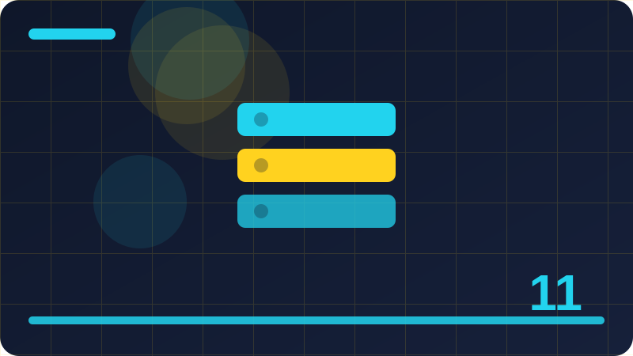

Chapter 11: Arrays and Lists

Section 1: What an Array Is
This section is about what an Array Is. At first the idea may sound abstract, but it becomes clear when you connect it to programs you have already written and to problems you already understand. You do not need to memorise a perfect definition of what an Array Is before you start. Instead, read the explanation slowly, study the example, and notice how the idea changes what a program can do. By the end of this section you should be able to explain what an Array Is in your own words, recognise it in other code, and use it in a small Kotlin program of your own. Think about what a reader of your code would need to know, and let your names and structure answer those questions directly.
Think of what an Array Is as a tool for organising your thinking and your data. Before this feature, a programmer might keep many separate variables and repeat the same instructions in several places, which quickly becomes hard to follow. This topic helps you group related values together, reuse work that already exists, and give each part of a program a clear purpose, so the whole program stays readable as it grows. When you design a program, ask what each part should know and what each part should do, because the answer to that question often points straight to the idea in this section. A useful habit is to predict the output before you run a program, then check your prediction against the real result.
Let us walk through how what an Array Is works in practice. The code example below is deliberately short, so you can focus on one idea at a time rather than juggling several new ideas at once. First, read the whole example from top to bottom without worrying about every symbol. Then look again and find the part that matches the main idea of this section. Ask what happens first when the program runs, what value is stored or passed along, and what is printed at the end, because tracing those steps turns a static listing into a moving picture. Do not rush past a section that feels unclear; a few extra minutes with a working example now will save confusion in later chapters.
There are a few common mistakes that beginners make with what an Array Is, and knowing them in advance can save you frustration. One mistake is to make everything too large or too general, instead of starting with the smallest version that works. Another mistake is to copy an example without understanding it, and then to struggle when a small change is needed. A third is to ignore naming and structure until the program is finished, by which time it is hard to fix. Avoid these traps by building in small steps, testing after each step, and keeping notes in plain words about what each part does and why it is there. Try to spot the same pattern in programs you have already written, because recognising a pattern is the first step to reusing it well.
fun main() {
val scores = arrayOf(10, 20, 30)
println(scores[1])
println(scores.size)
}Check: In your own words, explain what an Array Is and show it in a tiny Kotlin program of your own.
Section 2: Creating an Array in Kotlin
This section is about creating an Array in Kotlin. At first the idea may sound abstract, but it becomes clear when you connect it to programs you have already written and to problems you already understand. You do not need to memorise a perfect definition of creating an Array in Kotlin before you start. Instead, read the explanation slowly, study the example, and notice how the idea changes what a program can do. By the end of this section you should be able to explain creating an Array in Kotlin in your own words, recognise it in other code, and use it in a small Kotlin program of your own. Think about edge cases as you practise, such as empty collections, missing values and the first and last items in a sequence.
Think of creating an Array in Kotlin as a tool for organising your thinking and your data. Before this feature, a programmer might keep many separate variables and repeat the same instructions in several places, which quickly becomes hard to follow. This topic helps you group related values together, reuse work that already exists, and give each part of a program a clear purpose, so the whole program stays readable as it grows. When you design a program, ask what each part should know and what each part should do, because the answer to that question often points straight to the idea in this section. A program that handles the ordinary case well and fails gracefully on unusual input is far more useful than one that only works on perfect data.
Let us walk through how creating an Array in Kotlin works in practice. The code example below is deliberately short, so you can focus on one idea at a time rather than juggling several new ideas at once. First, read the whole example from top to bottom without worrying about every symbol. Then look again and find the part that matches the main idea of this section. Ask what happens first when the program runs, what value is stored or passed along, and what is printed at the end, because tracing those steps turns a static listing into a moving picture. Revisit this section tomorrow and rewrite the example from memory, because recall practice strengthens understanding far better than re-reading alone.
There are a few common mistakes that beginners make with creating an Array in Kotlin, and knowing them in advance can save you frustration. One mistake is to make everything too large or too general, instead of starting with the smallest version that works. Another mistake is to copy an example without understanding it, and then to struggle when a small change is needed. A third is to ignore naming and structure until the program is finished, by which time it is hard to fix. Avoid these traps by building in small steps, testing after each step, and keeping notes in plain words about what each part does and why it is there. Discuss the idea with another learner if you can, since explaining a concept to someone else quickly reveals any gaps in your own thinking.
fun main() {
val names = listOf("Ada", "Ben", "Cara")
for (name in names) {
println(name)
}
}Check: In your own words, explain creating an Array in Kotlin and show it in a tiny Kotlin program of your own.
Section 3: Array Size and Indexing
This section is about array Size and Indexing. At first the idea may sound abstract, but it becomes clear when you connect it to programs you have already written and to problems you already understand. You do not need to memorise a perfect definition of array Size and Indexing before you start. Instead, read the explanation slowly, study the example, and notice how the idea changes what a program can do. By the end of this section you should be able to explain array Size and Indexing in your own words, recognise it in other code, and use it in a small Kotlin program of your own. Try typing the example yourself instead of copying it, because typing forces you to notice every name, bracket and punctuation mark.
Think of array Size and Indexing as a tool for organising your thinking and your data. Before this feature, a programmer might keep many separate variables and repeat the same instructions in several places, which quickly becomes hard to follow. This topic helps you group related values together, reuse work that already exists, and give each part of a program a clear purpose, so the whole program stays readable as it grows. When you design a program, ask what each part should know and what each part should do, because the answer to that question often points straight to the idea in this section. When you run the program, compare the output with what you expected, and if they differ, treat that difference as a useful clue.
Let us walk through how array Size and Indexing works in practice. The code example below is deliberately short, so you can focus on one idea at a time rather than juggling several new ideas at once. First, read the whole example from top to bottom without worrying about every symbol. Then look again and find the part that matches the main idea of this section. Ask what happens first when the program runs, what value is stored or passed along, and what is printed at the end, because tracing those steps turns a static listing into a moving picture. A small experiment, such as changing one value and running the code again, often teaches more than reading the same page twice.
There are a few common mistakes that beginners make with array Size and Indexing, and knowing them in advance can save you frustration. One mistake is to make everything too large or too general, instead of starting with the smallest version that works. Another mistake is to copy an example without understanding it, and then to struggle when a small change is needed. A third is to ignore naming and structure until the program is finished, by which time it is hard to fix. Avoid these traps by building in small steps, testing after each step, and keeping notes in plain words about what each part does and why it is there. Good names matter here: a clear variable name tells the next reader what the value means without needing an extra comment.
fun main() {
val items = mutableListOf("pen", "book")
items.add("ruler")
items.remove("pen")
println(items)
}Check: In your own words, explain array Size and Indexing and show it in a tiny Kotlin program of your own.
Section 4: Reading Values from an Array
This section is about reading Values from an Array. At first the idea may sound abstract, but it becomes clear when you connect it to programs you have already written and to problems you already understand. You do not need to memorise a perfect definition of reading Values from an Array before you start. Instead, read the explanation slowly, study the example, and notice how the idea changes what a program can do. By the end of this section you should be able to explain reading Values from an Array in your own words, recognise it in other code, and use it in a small Kotlin program of your own. Explain the idea aloud in your own words after you finish a section, because an idea you cannot explain is an idea you have not yet understood.
Think of reading Values from an Array as a tool for organising your thinking and your data. Before this feature, a programmer might keep many separate variables and repeat the same instructions in several places, which quickly becomes hard to follow. This topic helps you group related values together, reuse work that already exists, and give each part of a program a clear purpose, so the whole program stays readable as it grows. When you design a program, ask what each part should know and what each part should do, because the answer to that question often points straight to the idea in this section. Notice how this topic connects to ideas from earlier chapters, since Kotlin programs are built by combining small, familiar pieces.
Let us walk through how reading Values from an Array works in practice. The code example below is deliberately short, so you can focus on one idea at a time rather than juggling several new ideas at once. First, read the whole example from top to bottom without worrying about every symbol. Then look again and find the part that matches the main idea of this section. Ask what happens first when the program runs, what value is stored or passed along, and what is printed at the end, because tracing those steps turns a static listing into a moving picture. Before you move on, ask yourself what problem this feature solves and when you would reach for it in a real program.
There are a few common mistakes that beginners make with reading Values from an Array, and knowing them in advance can save you frustration. One mistake is to make everything too large or too general, instead of starting with the smallest version that works. Another mistake is to copy an example without understanding it, and then to struggle when a small change is needed. A third is to ignore naming and structure until the program is finished, by which time it is hard to fix. Avoid these traps by building in small steps, testing after each step, and keeping notes in plain words about what each part does and why it is there. Write a second tiny example of your own that uses the same idea with different values, and check that it behaves as you predicted.
fun main() {
val numbers = listOf(5, 2, 9, 1)
println(numbers.sorted())
println(numbers.reversed())
println(numbers.first())
println(numbers.last())
}Check: In your own words, explain reading Values from an Array and show it in a tiny Kotlin program of your own.
Section 5: Changing Values in an Array
This section is about changing Values in an Array. At first the idea may sound abstract, but it becomes clear when you connect it to programs you have already written and to problems you already understand. You do not need to memorise a perfect definition of changing Values in an Array before you start. Instead, read the explanation slowly, study the example, and notice how the idea changes what a program can do. By the end of this section you should be able to explain changing Values in an Array in your own words, recognise it in other code, and use it in a small Kotlin program of your own. Keep your practice files organised by chapter, so you can return to an earlier example quickly when a later chapter builds on it.
Think of changing Values in an Array as a tool for organising your thinking and your data. Before this feature, a programmer might keep many separate variables and repeat the same instructions in several places, which quickly becomes hard to follow. This topic helps you group related values together, reuse work that already exists, and give each part of a program a clear purpose, so the whole program stays readable as it grows. When you design a program, ask what each part should know and what each part should do, because the answer to that question often points straight to the idea in this section. Remember that understanding grows through practice: one working program you built yourself is worth several pages you only skimmed.
Let us walk through how changing Values in an Array works in practice. The code example below is deliberately short, so you can focus on one idea at a time rather than juggling several new ideas at once. First, read the whole example from top to bottom without worrying about every symbol. Then look again and find the part that matches the main idea of this section. Ask what happens first when the program runs, what value is stored or passed along, and what is printed at the end, because tracing those steps turns a static listing into a moving picture. When you are unsure about a detail, test it with the smallest possible program rather than guessing and carrying the doubt forward.
There are a few common mistakes that beginners make with changing Values in an Array, and knowing them in advance can save you frustration. One mistake is to make everything too large or too general, instead of starting with the smallest version that works. Another mistake is to copy an example without understanding it, and then to struggle when a small change is needed. A third is to ignore naming and structure until the program is finished, by which time it is hard to fix. Avoid these traps by building in small steps, testing after each step, and keeping notes in plain words about what each part does and why it is there. Think about what a reader of your code would need to know, and let your names and structure answer those questions directly.
fun main() {
val data = arrayOf("red", "green", "blue")
val asList = data.toList()
println(asList.contains("green"))
println(asList.getOrNull(9))
}Check: In your own words, explain changing Values in an Array and show it in a tiny Kotlin program of your own.
Section 6: Looping Over an Array
This section is about looping Over an Array. At first the idea may sound abstract, but it becomes clear when you connect it to programs you have already written and to problems you already understand. You do not need to memorise a perfect definition of looping Over an Array before you start. Instead, read the explanation slowly, study the example, and notice how the idea changes what a program can do. By the end of this section you should be able to explain looping Over an Array in your own words, recognise it in other code, and use it in a small Kotlin program of your own. Keep notes in plain words about what each new feature does, and add one example sentence that shows it in action.
Think of looping Over an Array as a tool for organising your thinking and your data. Before this feature, a programmer might keep many separate variables and repeat the same instructions in several places, which quickly becomes hard to follow. This topic helps you group related values together, reuse work that already exists, and give each part of a program a clear purpose, so the whole program stays readable as it grows. When you design a program, ask what each part should know and what each part should do, because the answer to that question often points straight to the idea in this section. If you get stuck, simplify the example until it works again, then add complexity back one small piece at a time.
Let us walk through how looping Over an Array works in practice. The code example below is deliberately short, so you can focus on one idea at a time rather than juggling several new ideas at once. First, read the whole example from top to bottom without worrying about every symbol. Then look again and find the part that matches the main idea of this section. Ask what happens first when the program runs, what value is stored or passed along, and what is printed at the end, because tracing those steps turns a static listing into a moving picture. Check your spelling of names carefully, since Kotlin treats names that differ by a single letter as completely different things.
There are a few common mistakes that beginners make with looping Over an Array, and knowing them in advance can save you frustration. One mistake is to make everything too large or too general, instead of starting with the smallest version that works. Another mistake is to copy an example without understanding it, and then to struggle when a small change is needed. A third is to ignore naming and structure until the program is finished, by which time it is hard to fix. Avoid these traps by building in small steps, testing after each step, and keeping notes in plain words about what each part does and why it is there. Think about edge cases as you practise, such as empty collections, missing values and the first and last items in a sequence.
fun main() {
val scores = arrayOf(10, 20, 30)
println(scores[1])
println(scores.size)
}Check: In your own words, explain looping Over an Array and show it in a tiny Kotlin program of your own.
Section 7: Arrays of Numbers
This section is about arrays of Numbers. At first the idea may sound abstract, but it becomes clear when you connect it to programs you have already written and to problems you already understand. You do not need to memorise a perfect definition of arrays of Numbers before you start. Instead, read the explanation slowly, study the example, and notice how the idea changes what a program can do. By the end of this section you should be able to explain arrays of Numbers in your own words, recognise it in other code, and use it in a small Kotlin program of your own. Notice which parts of the example are essential and which are just decoration, so you can adapt the pattern to your own programs.
Think of arrays of Numbers as a tool for organising your thinking and your data. Before this feature, a programmer might keep many separate variables and repeat the same instructions in several places, which quickly becomes hard to follow. This topic helps you group related values together, reuse work that already exists, and give each part of a program a clear purpose, so the whole program stays readable as it grows. When you design a program, ask what each part should know and what each part should do, because the answer to that question often points straight to the idea in this section. End each practice session by saving a working example that you understand, rather than leaving behind a half-finished experiment.
Let us walk through how arrays of Numbers works in practice. The code example below is deliberately short, so you can focus on one idea at a time rather than juggling several new ideas at once. First, read the whole example from top to bottom without worrying about every symbol. Then look again and find the part that matches the main idea of this section. Ask what happens first when the program runs, what value is stored or passed along, and what is printed at the end, because tracing those steps turns a static listing into a moving picture. Reading the example slowly first, before you change anything, helps you see the shape of the idea rather than getting lost in small symbols.
There are a few common mistakes that beginners make with arrays of Numbers, and knowing them in advance can save you frustration. One mistake is to make everything too large or too general, instead of starting with the smallest version that works. Another mistake is to copy an example without understanding it, and then to struggle when a small change is needed. A third is to ignore naming and structure until the program is finished, by which time it is hard to fix. Avoid these traps by building in small steps, testing after each step, and keeping notes in plain words about what each part does and why it is there. Try typing the example yourself instead of copying it, because typing forces you to notice every name, bracket and punctuation mark.
fun main() {
val names = listOf("Ada", "Ben", "Cara")
for (name in names) {
println(name)
}
}Check: In your own words, explain arrays of Numbers and show it in a tiny Kotlin program of your own.
Section 8: Arrays of Strings
This section is about arrays of Strings. At first the idea may sound abstract, but it becomes clear when you connect it to programs you have already written and to problems you already understand. You do not need to memorise a perfect definition of arrays of Strings before you start. Instead, read the explanation slowly, study the example, and notice how the idea changes what a program can do. By the end of this section you should be able to explain arrays of Strings in your own words, recognise it in other code, and use it in a small Kotlin program of your own. Keep each test program short and focused on one idea, so that when something goes wrong you know exactly where to look.
Think of arrays of Strings as a tool for organising your thinking and your data. Before this feature, a programmer might keep many separate variables and repeat the same instructions in several places, which quickly becomes hard to follow. This topic helps you group related values together, reuse work that already exists, and give each part of a program a clear purpose, so the whole program stays readable as it grows. When you design a program, ask what each part should know and what each part should do, because the answer to that question often points straight to the idea in this section. If the compiler reports an error, read the message calmly and check the line it points to before changing anything else.
Let us walk through how arrays of Strings works in practice. The code example below is deliberately short, so you can focus on one idea at a time rather than juggling several new ideas at once. First, read the whole example from top to bottom without worrying about every symbol. Then look again and find the part that matches the main idea of this section. Ask what happens first when the program runs, what value is stored or passed along, and what is printed at the end, because tracing those steps turns a static listing into a moving picture. Breaking a small example on purpose, in a safe practice file, is a good way to learn what each part of the code really does.
There are a few common mistakes that beginners make with arrays of Strings, and knowing them in advance can save you frustration. One mistake is to make everything too large or too general, instead of starting with the smallest version that works. Another mistake is to copy an example without understanding it, and then to struggle when a small change is needed. A third is to ignore naming and structure until the program is finished, by which time it is hard to fix. Avoid these traps by building in small steps, testing after each step, and keeping notes in plain words about what each part does and why it is there. Explain the idea aloud in your own words after you finish a section, because an idea you cannot explain is an idea you have not yet understood.
fun main() {
val items = mutableListOf("pen", "book")
items.add("ruler")
items.remove("pen")
println(items)
}Check: In your own words, explain arrays of Strings and show it in a tiny Kotlin program of your own.
Section 9: The arrayOf Function
This section is about the arrayOf Function. At first the idea may sound abstract, but it becomes clear when you connect it to programs you have already written and to problems you already understand. You do not need to memorise a perfect definition of the arrayOf Function before you start. Instead, read the explanation slowly, study the example, and notice how the idea changes what a program can do. By the end of this section you should be able to explain the arrayOf Function in your own words, recognise it in other code, and use it in a small Kotlin program of your own. Pay attention to the order in which statements run, because the sequence of steps is often what determines the final result.
Think of the arrayOf Function as a tool for organising your thinking and your data. Before this feature, a programmer might keep many separate variables and repeat the same instructions in several places, which quickly becomes hard to follow. This topic helps you group related values together, reuse work that already exists, and give each part of a program a clear purpose, so the whole program stays readable as it grows. When you design a program, ask what each part should know and what each part should do, because the answer to that question often points straight to the idea in this section. If a result surprises you, add a temporary print statement to show the value at each step, then remove it once you understand.
Let us walk through how the arrayOf Function works in practice. The code example below is deliberately short, so you can focus on one idea at a time rather than juggling several new ideas at once. First, read the whole example from top to bottom without worrying about every symbol. Then look again and find the part that matches the main idea of this section. Ask what happens first when the program runs, what value is stored or passed along, and what is printed at the end, because tracing those steps turns a static listing into a moving picture. Short, clear code is easier to test than clever, compact code, so prefer the version that a beginner could follow.
There are a few common mistakes that beginners make with the arrayOf Function, and knowing them in advance can save you frustration. One mistake is to make everything too large or too general, instead of starting with the smallest version that works. Another mistake is to copy an example without understanding it, and then to struggle when a small change is needed. A third is to ignore naming and structure until the program is finished, by which time it is hard to fix. Avoid these traps by building in small steps, testing after each step, and keeping notes in plain words about what each part does and why it is there. Keep your practice files organised by chapter, so you can return to an earlier example quickly when a later chapter builds on it.
fun main() {
val numbers = listOf(5, 2, 9, 1)
println(numbers.sorted())
println(numbers.reversed())
println(numbers.first())
println(numbers.last())
}Check: In your own words, explain the arrayOf Function and show it in a tiny Kotlin program of your own.
Section 10: Empty Arrays and Their Uses
This section is about empty Arrays and Their Uses. At first the idea may sound abstract, but it becomes clear when you connect it to programs you have already written and to problems you already understand. You do not need to memorise a perfect definition of empty Arrays and Their Uses before you start. Instead, read the explanation slowly, study the example, and notice how the idea changes what a program can do. By the end of this section you should be able to explain empty Arrays and Their Uses in your own words, recognise it in other code, and use it in a small Kotlin program of your own. A useful habit is to predict the output before you run a program, then check your prediction against the real result.
Think of empty Arrays and Their Uses as a tool for organising your thinking and your data. Before this feature, a programmer might keep many separate variables and repeat the same instructions in several places, which quickly becomes hard to follow. This topic helps you group related values together, reuse work that already exists, and give each part of a program a clear purpose, so the whole program stays readable as it grows. When you design a program, ask what each part should know and what each part should do, because the answer to that question often points straight to the idea in this section. Do not rush past a section that feels unclear; a few extra minutes with a working example now will save confusion in later chapters.
Let us walk through how empty Arrays and Their Uses works in practice. The code example below is deliberately short, so you can focus on one idea at a time rather than juggling several new ideas at once. First, read the whole example from top to bottom without worrying about every symbol. Then look again and find the part that matches the main idea of this section. Ask what happens first when the program runs, what value is stored or passed along, and what is printed at the end, because tracing those steps turns a static listing into a moving picture. Try to spot the same pattern in programs you have already written, because recognising a pattern is the first step to reusing it well.
There are a few common mistakes that beginners make with empty Arrays and Their Uses, and knowing them in advance can save you frustration. One mistake is to make everything too large or too general, instead of starting with the smallest version that works. Another mistake is to copy an example without understanding it, and then to struggle when a small change is needed. A third is to ignore naming and structure until the program is finished, by which time it is hard to fix. Avoid these traps by building in small steps, testing after each step, and keeping notes in plain words about what each part does and why it is there. Keep notes in plain words about what each new feature does, and add one example sentence that shows it in action.
fun main() {
val data = arrayOf("red", "green", "blue")
val asList = data.toList()
println(asList.contains("green"))
println(asList.getOrNull(9))
}Check: In your own words, explain empty Arrays and Their Uses and show it in a tiny Kotlin program of your own.
Section 11: What a List Is
This section is about what a List Is. At first the idea may sound abstract, but it becomes clear when you connect it to programs you have already written and to problems you already understand. You do not need to memorise a perfect definition of what a List Is before you start. Instead, read the explanation slowly, study the example, and notice how the idea changes what a program can do. By the end of this section you should be able to explain what a List Is in your own words, recognise it in other code, and use it in a small Kotlin program of your own. A program that handles the ordinary case well and fails gracefully on unusual input is far more useful than one that only works on perfect data.
Think of what a List Is as a tool for organising your thinking and your data. Before this feature, a programmer might keep many separate variables and repeat the same instructions in several places, which quickly becomes hard to follow. This topic helps you group related values together, reuse work that already exists, and give each part of a program a clear purpose, so the whole program stays readable as it grows. When you design a program, ask what each part should know and what each part should do, because the answer to that question often points straight to the idea in this section. Revisit this section tomorrow and rewrite the example from memory, because recall practice strengthens understanding far better than re-reading alone.
Let us walk through how what a List Is works in practice. The code example below is deliberately short, so you can focus on one idea at a time rather than juggling several new ideas at once. First, read the whole example from top to bottom without worrying about every symbol. Then look again and find the part that matches the main idea of this section. Ask what happens first when the program runs, what value is stored or passed along, and what is printed at the end, because tracing those steps turns a static listing into a moving picture. Discuss the idea with another learner if you can, since explaining a concept to someone else quickly reveals any gaps in your own thinking.
There are a few common mistakes that beginners make with what a List Is, and knowing them in advance can save you frustration. One mistake is to make everything too large or too general, instead of starting with the smallest version that works. Another mistake is to copy an example without understanding it, and then to struggle when a small change is needed. A third is to ignore naming and structure until the program is finished, by which time it is hard to fix. Avoid these traps by building in small steps, testing after each step, and keeping notes in plain words about what each part does and why it is there. Notice which parts of the example are essential and which are just decoration, so you can adapt the pattern to your own programs.
fun main() {
val scores = arrayOf(10, 20, 30)
println(scores[1])
println(scores.size)
}Check: In your own words, explain what a List Is and show it in a tiny Kotlin program of your own.
Section 12: Creating a Read-Only List
This section is about creating a Read-Only List. At first the idea may sound abstract, but it becomes clear when you connect it to programs you have already written and to problems you already understand. You do not need to memorise a perfect definition of creating a Read-Only List before you start. Instead, read the explanation slowly, study the example, and notice how the idea changes what a program can do. By the end of this section you should be able to explain creating a Read-Only List in your own words, recognise it in other code, and use it in a small Kotlin program of your own. When you run the program, compare the output with what you expected, and if they differ, treat that difference as a useful clue.
Think of creating a Read-Only List as a tool for organising your thinking and your data. Before this feature, a programmer might keep many separate variables and repeat the same instructions in several places, which quickly becomes hard to follow. This topic helps you group related values together, reuse work that already exists, and give each part of a program a clear purpose, so the whole program stays readable as it grows. When you design a program, ask what each part should know and what each part should do, because the answer to that question often points straight to the idea in this section. A small experiment, such as changing one value and running the code again, often teaches more than reading the same page twice.
Let us walk through how creating a Read-Only List works in practice. The code example below is deliberately short, so you can focus on one idea at a time rather than juggling several new ideas at once. First, read the whole example from top to bottom without worrying about every symbol. Then look again and find the part that matches the main idea of this section. Ask what happens first when the program runs, what value is stored or passed along, and what is printed at the end, because tracing those steps turns a static listing into a moving picture. Good names matter here: a clear variable name tells the next reader what the value means without needing an extra comment.
There are a few common mistakes that beginners make with creating a Read-Only List, and knowing them in advance can save you frustration. One mistake is to make everything too large or too general, instead of starting with the smallest version that works. Another mistake is to copy an example without understanding it, and then to struggle when a small change is needed. A third is to ignore naming and structure until the program is finished, by which time it is hard to fix. Avoid these traps by building in small steps, testing after each step, and keeping notes in plain words about what each part does and why it is there. Keep each test program short and focused on one idea, so that when something goes wrong you know exactly where to look.
fun main() {
val names = listOf("Ada", "Ben", "Cara")
for (name in names) {
println(name)
}
}Check: In your own words, explain creating a Read-Only List and show it in a tiny Kotlin program of your own.
Section 13: Creating a Mutable List
This section is about creating a Mutable List. At first the idea may sound abstract, but it becomes clear when you connect it to programs you have already written and to problems you already understand. You do not need to memorise a perfect definition of creating a Mutable List before you start. Instead, read the explanation slowly, study the example, and notice how the idea changes what a program can do. By the end of this section you should be able to explain creating a Mutable List in your own words, recognise it in other code, and use it in a small Kotlin program of your own. Notice how this topic connects to ideas from earlier chapters, since Kotlin programs are built by combining small, familiar pieces.
Think of creating a Mutable List as a tool for organising your thinking and your data. Before this feature, a programmer might keep many separate variables and repeat the same instructions in several places, which quickly becomes hard to follow. This topic helps you group related values together, reuse work that already exists, and give each part of a program a clear purpose, so the whole program stays readable as it grows. When you design a program, ask what each part should know and what each part should do, because the answer to that question often points straight to the idea in this section. Before you move on, ask yourself what problem this feature solves and when you would reach for it in a real program.
Let us walk through how creating a Mutable List works in practice. The code example below is deliberately short, so you can focus on one idea at a time rather than juggling several new ideas at once. First, read the whole example from top to bottom without worrying about every symbol. Then look again and find the part that matches the main idea of this section. Ask what happens first when the program runs, what value is stored or passed along, and what is printed at the end, because tracing those steps turns a static listing into a moving picture. Write a second tiny example of your own that uses the same idea with different values, and check that it behaves as you predicted.
There are a few common mistakes that beginners make with creating a Mutable List, and knowing them in advance can save you frustration. One mistake is to make everything too large or too general, instead of starting with the smallest version that works. Another mistake is to copy an example without understanding it, and then to struggle when a small change is needed. A third is to ignore naming and structure until the program is finished, by which time it is hard to fix. Avoid these traps by building in small steps, testing after each step, and keeping notes in plain words about what each part does and why it is there. Pay attention to the order in which statements run, because the sequence of steps is often what determines the final result.
fun main() {
val items = mutableListOf("pen", "book")
items.add("ruler")
items.remove("pen")
println(items)
}Check: In your own words, explain creating a Mutable List and show it in a tiny Kotlin program of your own.
Section 14: Adding Items to a Mutable List
This section is about adding Items to a Mutable List. At first the idea may sound abstract, but it becomes clear when you connect it to programs you have already written and to problems you already understand. You do not need to memorise a perfect definition of adding Items to a Mutable List before you start. Instead, read the explanation slowly, study the example, and notice how the idea changes what a program can do. By the end of this section you should be able to explain adding Items to a Mutable List in your own words, recognise it in other code, and use it in a small Kotlin program of your own. Remember that understanding grows through practice: one working program you built yourself is worth several pages you only skimmed.
Think of adding Items to a Mutable List as a tool for organising your thinking and your data. Before this feature, a programmer might keep many separate variables and repeat the same instructions in several places, which quickly becomes hard to follow. This topic helps you group related values together, reuse work that already exists, and give each part of a program a clear purpose, so the whole program stays readable as it grows. When you design a program, ask what each part should know and what each part should do, because the answer to that question often points straight to the idea in this section. When you are unsure about a detail, test it with the smallest possible program rather than guessing and carrying the doubt forward.
Let us walk through how adding Items to a Mutable List works in practice. The code example below is deliberately short, so you can focus on one idea at a time rather than juggling several new ideas at once. First, read the whole example from top to bottom without worrying about every symbol. Then look again and find the part that matches the main idea of this section. Ask what happens first when the program runs, what value is stored or passed along, and what is printed at the end, because tracing those steps turns a static listing into a moving picture. Think about what a reader of your code would need to know, and let your names and structure answer those questions directly.
There are a few common mistakes that beginners make with adding Items to a Mutable List, and knowing them in advance can save you frustration. One mistake is to make everything too large or too general, instead of starting with the smallest version that works. Another mistake is to copy an example without understanding it, and then to struggle when a small change is needed. A third is to ignore naming and structure until the program is finished, by which time it is hard to fix. Avoid these traps by building in small steps, testing after each step, and keeping notes in plain words about what each part does and why it is there. A useful habit is to predict the output before you run a program, then check your prediction against the real result.
fun main() {
val numbers = listOf(5, 2, 9, 1)
println(numbers.sorted())
println(numbers.reversed())
println(numbers.first())
println(numbers.last())
}Check: In your own words, explain adding Items to a Mutable List and show it in a tiny Kotlin program of your own.
Section 15: Removing Items from a List
This section is about removing Items from a List. At first the idea may sound abstract, but it becomes clear when you connect it to programs you have already written and to problems you already understand. You do not need to memorise a perfect definition of removing Items from a List before you start. Instead, read the explanation slowly, study the example, and notice how the idea changes what a program can do. By the end of this section you should be able to explain removing Items from a List in your own words, recognise it in other code, and use it in a small Kotlin program of your own. If you get stuck, simplify the example until it works again, then add complexity back one small piece at a time.
Think of removing Items from a List as a tool for organising your thinking and your data. Before this feature, a programmer might keep many separate variables and repeat the same instructions in several places, which quickly becomes hard to follow. This topic helps you group related values together, reuse work that already exists, and give each part of a program a clear purpose, so the whole program stays readable as it grows. When you design a program, ask what each part should know and what each part should do, because the answer to that question often points straight to the idea in this section. Check your spelling of names carefully, since Kotlin treats names that differ by a single letter as completely different things.
Let us walk through how removing Items from a List works in practice. The code example below is deliberately short, so you can focus on one idea at a time rather than juggling several new ideas at once. First, read the whole example from top to bottom without worrying about every symbol. Then look again and find the part that matches the main idea of this section. Ask what happens first when the program runs, what value is stored or passed along, and what is printed at the end, because tracing those steps turns a static listing into a moving picture. Think about edge cases as you practise, such as empty collections, missing values and the first and last items in a sequence.
There are a few common mistakes that beginners make with removing Items from a List, and knowing them in advance can save you frustration. One mistake is to make everything too large or too general, instead of starting with the smallest version that works. Another mistake is to copy an example without understanding it, and then to struggle when a small change is needed. A third is to ignore naming and structure until the program is finished, by which time it is hard to fix. Avoid these traps by building in small steps, testing after each step, and keeping notes in plain words about what each part does and why it is there. A program that handles the ordinary case well and fails gracefully on unusual input is far more useful than one that only works on perfect data.
fun main() {
val data = arrayOf("red", "green", "blue")
val asList = data.toList()
println(asList.contains("green"))
println(asList.getOrNull(9))
}Check: In your own words, explain removing Items from a List and show it in a tiny Kotlin program of your own.
Section 16: Accessing List Items by Index
This section is about accessing List Items by Index. At first the idea may sound abstract, but it becomes clear when you connect it to programs you have already written and to problems you already understand. You do not need to memorise a perfect definition of accessing List Items by Index before you start. Instead, read the explanation slowly, study the example, and notice how the idea changes what a program can do. By the end of this section you should be able to explain accessing List Items by Index in your own words, recognise it in other code, and use it in a small Kotlin program of your own. End each practice session by saving a working example that you understand, rather than leaving behind a half-finished experiment.
Think of accessing List Items by Index as a tool for organising your thinking and your data. Before this feature, a programmer might keep many separate variables and repeat the same instructions in several places, which quickly becomes hard to follow. This topic helps you group related values together, reuse work that already exists, and give each part of a program a clear purpose, so the whole program stays readable as it grows. When you design a program, ask what each part should know and what each part should do, because the answer to that question often points straight to the idea in this section. Reading the example slowly first, before you change anything, helps you see the shape of the idea rather than getting lost in small symbols.
Let us walk through how accessing List Items by Index works in practice. The code example below is deliberately short, so you can focus on one idea at a time rather than juggling several new ideas at once. First, read the whole example from top to bottom without worrying about every symbol. Then look again and find the part that matches the main idea of this section. Ask what happens first when the program runs, what value is stored or passed along, and what is printed at the end, because tracing those steps turns a static listing into a moving picture. Try typing the example yourself instead of copying it, because typing forces you to notice every name, bracket and punctuation mark.
There are a few common mistakes that beginners make with accessing List Items by Index, and knowing them in advance can save you frustration. One mistake is to make everything too large or too general, instead of starting with the smallest version that works. Another mistake is to copy an example without understanding it, and then to struggle when a small change is needed. A third is to ignore naming and structure until the program is finished, by which time it is hard to fix. Avoid these traps by building in small steps, testing after each step, and keeping notes in plain words about what each part does and why it is there. When you run the program, compare the output with what you expected, and if they differ, treat that difference as a useful clue.
fun main() {
val scores = arrayOf(10, 20, 30)
println(scores[1])
println(scores.size)
}Check: In your own words, explain accessing List Items by Index and show it in a tiny Kotlin program of your own.
Section 17: List Size and Empty Checks
This section is about list Size and Empty Checks. At first the idea may sound abstract, but it becomes clear when you connect it to programs you have already written and to problems you already understand. You do not need to memorise a perfect definition of list Size and Empty Checks before you start. Instead, read the explanation slowly, study the example, and notice how the idea changes what a program can do. By the end of this section you should be able to explain list Size and Empty Checks in your own words, recognise it in other code, and use it in a small Kotlin program of your own. If the compiler reports an error, read the message calmly and check the line it points to before changing anything else.
Think of list Size and Empty Checks as a tool for organising your thinking and your data. Before this feature, a programmer might keep many separate variables and repeat the same instructions in several places, which quickly becomes hard to follow. This topic helps you group related values together, reuse work that already exists, and give each part of a program a clear purpose, so the whole program stays readable as it grows. When you design a program, ask what each part should know and what each part should do, because the answer to that question often points straight to the idea in this section. Breaking a small example on purpose, in a safe practice file, is a good way to learn what each part of the code really does.
Let us walk through how list Size and Empty Checks works in practice. The code example below is deliberately short, so you can focus on one idea at a time rather than juggling several new ideas at once. First, read the whole example from top to bottom without worrying about every symbol. Then look again and find the part that matches the main idea of this section. Ask what happens first when the program runs, what value is stored or passed along, and what is printed at the end, because tracing those steps turns a static listing into a moving picture. Explain the idea aloud in your own words after you finish a section, because an idea you cannot explain is an idea you have not yet understood.
There are a few common mistakes that beginners make with list Size and Empty Checks, and knowing them in advance can save you frustration. One mistake is to make everything too large or too general, instead of starting with the smallest version that works. Another mistake is to copy an example without understanding it, and then to struggle when a small change is needed. A third is to ignore naming and structure until the program is finished, by which time it is hard to fix. Avoid these traps by building in small steps, testing after each step, and keeping notes in plain words about what each part does and why it is there.
fun main() {
val names = listOf("Ada", "Ben", "Cara")
for (name in names) {
println(name)
}
}Check: In your own words, explain list Size and Empty Checks and show it in a tiny Kotlin program of your own.
Section 18: Looping Over a List
This section is about looping Over a List. At first the idea may sound abstract, but it becomes clear when you connect it to programs you have already written and to problems you already understand. You do not need to memorise a perfect definition of looping Over a List before you start. Instead, read the explanation slowly, study the example, and notice how the idea changes what a program can do. By the end of this section you should be able to explain looping Over a List in your own words, recognise it in other code, and use it in a small Kotlin program of your own. If a result surprises you, add a temporary print statement to show the value at each step, then remove it once you understand.
Think of looping Over a List as a tool for organising your thinking and your data. Before this feature, a programmer might keep many separate variables and repeat the same instructions in several places, which quickly becomes hard to follow. This topic helps you group related values together, reuse work that already exists, and give each part of a program a clear purpose, so the whole program stays readable as it grows. When you design a program, ask what each part should know and what each part should do, because the answer to that question often points straight to the idea in this section. Short, clear code is easier to test than clever, compact code, so prefer the version that a beginner could follow.
Let us walk through how looping Over a List works in practice. The code example below is deliberately short, so you can focus on one idea at a time rather than juggling several new ideas at once. First, read the whole example from top to bottom without worrying about every symbol. Then look again and find the part that matches the main idea of this section. Ask what happens first when the program runs, what value is stored or passed along, and what is printed at the end, because tracing those steps turns a static listing into a moving picture. Keep your practice files organised by chapter, so you can return to an earlier example quickly when a later chapter builds on it.
There are a few common mistakes that beginners make with looping Over a List, and knowing them in advance can save you frustration. One mistake is to make everything too large or too general, instead of starting with the smallest version that works. Another mistake is to copy an example without understanding it, and then to struggle when a small change is needed. A third is to ignore naming and structure until the program is finished, by which time it is hard to fix. Avoid these traps by building in small steps, testing after each step, and keeping notes in plain words about what each part does and why it is there. Remember that understanding grows through practice: one working program you built yourself is worth several pages you only skimmed.
fun main() {
val items = mutableListOf("pen", "book")
items.add("ruler")
items.remove("pen")
println(items)
}Check: In your own words, explain looping Over a List and show it in a tiny Kotlin program of your own.
Section 19: Lists Versus Arrays
This section is about lists Versus Arrays. At first the idea may sound abstract, but it becomes clear when you connect it to programs you have already written and to problems you already understand. You do not need to memorise a perfect definition of lists Versus Arrays before you start. Instead, read the explanation slowly, study the example, and notice how the idea changes what a program can do. By the end of this section you should be able to explain lists Versus Arrays in your own words, recognise it in other code, and use it in a small Kotlin program of your own. Do not rush past a section that feels unclear; a few extra minutes with a working example now will save confusion in later chapters.
Think of lists Versus Arrays as a tool for organising your thinking and your data. Before this feature, a programmer might keep many separate variables and repeat the same instructions in several places, which quickly becomes hard to follow. This topic helps you group related values together, reuse work that already exists, and give each part of a program a clear purpose, so the whole program stays readable as it grows. When you design a program, ask what each part should know and what each part should do, because the answer to that question often points straight to the idea in this section. Try to spot the same pattern in programs you have already written, because recognising a pattern is the first step to reusing it well.
Let us walk through how lists Versus Arrays works in practice. The code example below is deliberately short, so you can focus on one idea at a time rather than juggling several new ideas at once. First, read the whole example from top to bottom without worrying about every symbol. Then look again and find the part that matches the main idea of this section. Ask what happens first when the program runs, what value is stored or passed along, and what is printed at the end, because tracing those steps turns a static listing into a moving picture. Keep notes in plain words about what each new feature does, and add one example sentence that shows it in action.
There are a few common mistakes that beginners make with lists Versus Arrays, and knowing them in advance can save you frustration. One mistake is to make everything too large or too general, instead of starting with the smallest version that works. Another mistake is to copy an example without understanding it, and then to struggle when a small change is needed. A third is to ignore naming and structure until the program is finished, by which time it is hard to fix. Avoid these traps by building in small steps, testing after each step, and keeping notes in plain words about what each part does and why it is there. If you get stuck, simplify the example until it works again, then add complexity back one small piece at a time.
fun main() {
val numbers = listOf(5, 2, 9, 1)
println(numbers.sorted())
println(numbers.reversed())
println(numbers.first())
println(numbers.last())
}Check: In your own words, explain lists Versus Arrays and show it in a tiny Kotlin program of your own.
Section 20: The First and Last Items
This section is about the First and Last Items. At first the idea may sound abstract, but it becomes clear when you connect it to programs you have already written and to problems you already understand. You do not need to memorise a perfect definition of the First and Last Items before you start. Instead, read the explanation slowly, study the example, and notice how the idea changes what a program can do. By the end of this section you should be able to explain the First and Last Items in your own words, recognise it in other code, and use it in a small Kotlin program of your own. Revisit this section tomorrow and rewrite the example from memory, because recall practice strengthens understanding far better than re-reading alone.
Think of the First and Last Items as a tool for organising your thinking and your data. Before this feature, a programmer might keep many separate variables and repeat the same instructions in several places, which quickly becomes hard to follow. This topic helps you group related values together, reuse work that already exists, and give each part of a program a clear purpose, so the whole program stays readable as it grows. When you design a program, ask what each part should know and what each part should do, because the answer to that question often points straight to the idea in this section. Discuss the idea with another learner if you can, since explaining a concept to someone else quickly reveals any gaps in your own thinking.
Let us walk through how the First and Last Items works in practice. The code example below is deliberately short, so you can focus on one idea at a time rather than juggling several new ideas at once. First, read the whole example from top to bottom without worrying about every symbol. Then look again and find the part that matches the main idea of this section. Ask what happens first when the program runs, what value is stored or passed along, and what is printed at the end, because tracing those steps turns a static listing into a moving picture. Notice which parts of the example are essential and which are just decoration, so you can adapt the pattern to your own programs.
There are a few common mistakes that beginners make with the First and Last Items, and knowing them in advance can save you frustration. One mistake is to make everything too large or too general, instead of starting with the smallest version that works. Another mistake is to copy an example without understanding it, and then to struggle when a small change is needed. A third is to ignore naming and structure until the program is finished, by which time it is hard to fix. Avoid these traps by building in small steps, testing after each step, and keeping notes in plain words about what each part does and why it is there. End each practice session by saving a working example that you understand, rather than leaving behind a half-finished experiment.
fun main() {
val data = arrayOf("red", "green", "blue")
val asList = data.toList()
println(asList.contains("green"))
println(asList.getOrNull(9))
}Check: In your own words, explain the First and Last Items and show it in a tiny Kotlin program of your own.
Section 21: Checking Whether a List Contains an Item
This section is about checking Whether a List Contains an Item. At first the idea may sound abstract, but it becomes clear when you connect it to programs you have already written and to problems you already understand. You do not need to memorise a perfect definition of checking Whether a List Contains an Item before you start. Instead, read the explanation slowly, study the example, and notice how the idea changes what a program can do. By the end of this section you should be able to explain checking Whether a List Contains an Item in your own words, recognise it in other code, and use it in a small Kotlin program of your own. A small experiment, such as changing one value and running the code again, often teaches more than reading the same page twice.
Think of checking Whether a List Contains an Item as a tool for organising your thinking and your data. Before this feature, a programmer might keep many separate variables and repeat the same instructions in several places, which quickly becomes hard to follow. This topic helps you group related values together, reuse work that already exists, and give each part of a program a clear purpose, so the whole program stays readable as it grows. When you design a program, ask what each part should know and what each part should do, because the answer to that question often points straight to the idea in this section. Good names matter here: a clear variable name tells the next reader what the value means without needing an extra comment.
Let us walk through how checking Whether a List Contains an Item works in practice. The code example below is deliberately short, so you can focus on one idea at a time rather than juggling several new ideas at once. First, read the whole example from top to bottom without worrying about every symbol. Then look again and find the part that matches the main idea of this section. Ask what happens first when the program runs, what value is stored or passed along, and what is printed at the end, because tracing those steps turns a static listing into a moving picture. Keep each test program short and focused on one idea, so that when something goes wrong you know exactly where to look.
There are a few common mistakes that beginners make with checking Whether a List Contains an Item, and knowing them in advance can save you frustration. One mistake is to make everything too large or too general, instead of starting with the smallest version that works. Another mistake is to copy an example without understanding it, and then to struggle when a small change is needed. A third is to ignore naming and structure until the program is finished, by which time it is hard to fix. Avoid these traps by building in small steps, testing after each step, and keeping notes in plain words about what each part does and why it is there.
fun main() {
val scores = arrayOf(10, 20, 30)
println(scores[1])
println(scores.size)
}Check: In your own words, explain checking Whether a List Contains an Item and show it in a tiny Kotlin program of your own.
Section 22: Finding an Item's Index
This section is about finding an Item's Index. At first the idea may sound abstract, but it becomes clear when you connect it to programs you have already written and to problems you already understand. You do not need to memorise a perfect definition of finding an Item's Index before you start. Instead, read the explanation slowly, study the example, and notice how the idea changes what a program can do. By the end of this section you should be able to explain finding an Item's Index in your own words, recognise it in other code, and use it in a small Kotlin program of your own. Before you move on, ask yourself what problem this feature solves and when you would reach for it in a real program.
Think of finding an Item's Index as a tool for organising your thinking and your data. Before this feature, a programmer might keep many separate variables and repeat the same instructions in several places, which quickly becomes hard to follow. This topic helps you group related values together, reuse work that already exists, and give each part of a program a clear purpose, so the whole program stays readable as it grows. When you design a program, ask what each part should know and what each part should do, because the answer to that question often points straight to the idea in this section. Write a second tiny example of your own that uses the same idea with different values, and check that it behaves as you predicted.
Let us walk through how finding an Item's Index works in practice. The code example below is deliberately short, so you can focus on one idea at a time rather than juggling several new ideas at once. First, read the whole example from top to bottom without worrying about every symbol. Then look again and find the part that matches the main idea of this section. Ask what happens first when the program runs, what value is stored or passed along, and what is printed at the end, because tracing those steps turns a static listing into a moving picture. Pay attention to the order in which statements run, because the sequence of steps is often what determines the final result.
There are a few common mistakes that beginners make with finding an Item's Index, and knowing them in advance can save you frustration. One mistake is to make everything too large or too general, instead of starting with the smallest version that works. Another mistake is to copy an example without understanding it, and then to struggle when a small change is needed. A third is to ignore naming and structure until the program is finished, by which time it is hard to fix. Avoid these traps by building in small steps, testing after each step, and keeping notes in plain words about what each part does and why it is there. If a result surprises you, add a temporary print statement to show the value at each step, then remove it once you understand.
fun main() {
val names = listOf("Ada", "Ben", "Cara")
for (name in names) {
println(name)
}
}Check: In your own words, explain finding an Item's Index and show it in a tiny Kotlin program of your own.
Section 23: Sorting a List
This section is about sorting a List. At first the idea may sound abstract, but it becomes clear when you connect it to programs you have already written and to problems you already understand. You do not need to memorise a perfect definition of sorting a List before you start. Instead, read the explanation slowly, study the example, and notice how the idea changes what a program can do. By the end of this section you should be able to explain sorting a List in your own words, recognise it in other code, and use it in a small Kotlin program of your own. When you are unsure about a detail, test it with the smallest possible program rather than guessing and carrying the doubt forward.
Think of sorting a List as a tool for organising your thinking and your data. Before this feature, a programmer might keep many separate variables and repeat the same instructions in several places, which quickly becomes hard to follow. This topic helps you group related values together, reuse work that already exists, and give each part of a program a clear purpose, so the whole program stays readable as it grows. When you design a program, ask what each part should know and what each part should do, because the answer to that question often points straight to the idea in this section. Think about what a reader of your code would need to know, and let your names and structure answer those questions directly.
Let us walk through how sorting a List works in practice. The code example below is deliberately short, so you can focus on one idea at a time rather than juggling several new ideas at once. First, read the whole example from top to bottom without worrying about every symbol. Then look again and find the part that matches the main idea of this section. Ask what happens first when the program runs, what value is stored or passed along, and what is printed at the end, because tracing those steps turns a static listing into a moving picture. A useful habit is to predict the output before you run a program, then check your prediction against the real result.
There are a few common mistakes that beginners make with sorting a List, and knowing them in advance can save you frustration. One mistake is to make everything too large or too general, instead of starting with the smallest version that works. Another mistake is to copy an example without understanding it, and then to struggle when a small change is needed. A third is to ignore naming and structure until the program is finished, by which time it is hard to fix. Avoid these traps by building in small steps, testing after each step, and keeping notes in plain words about what each part does and why it is there. Do not rush past a section that feels unclear; a few extra minutes with a working example now will save confusion in later chapters.
fun main() {
val items = mutableListOf("pen", "book")
items.add("ruler")
items.remove("pen")
println(items)
}Check: In your own words, explain sorting a List and show it in a tiny Kotlin program of your own.
Section 24: Reversing a List
This section is about reversing a List. At first the idea may sound abstract, but it becomes clear when you connect it to programs you have already written and to problems you already understand. You do not need to memorise a perfect definition of reversing a List before you start. Instead, read the explanation slowly, study the example, and notice how the idea changes what a program can do. By the end of this section you should be able to explain reversing a List in your own words, recognise it in other code, and use it in a small Kotlin program of your own. Check your spelling of names carefully, since Kotlin treats names that differ by a single letter as completely different things.
Think of reversing a List as a tool for organising your thinking and your data. Before this feature, a programmer might keep many separate variables and repeat the same instructions in several places, which quickly becomes hard to follow. This topic helps you group related values together, reuse work that already exists, and give each part of a program a clear purpose, so the whole program stays readable as it grows. When you design a program, ask what each part should know and what each part should do, because the answer to that question often points straight to the idea in this section. Think about edge cases as you practise, such as empty collections, missing values and the first and last items in a sequence.
Let us walk through how reversing a List works in practice. The code example below is deliberately short, so you can focus on one idea at a time rather than juggling several new ideas at once. First, read the whole example from top to bottom without worrying about every symbol. Then look again and find the part that matches the main idea of this section. Ask what happens first when the program runs, what value is stored or passed along, and what is printed at the end, because tracing those steps turns a static listing into a moving picture. A program that handles the ordinary case well and fails gracefully on unusual input is far more useful than one that only works on perfect data.
There are a few common mistakes that beginners make with reversing a List, and knowing them in advance can save you frustration. One mistake is to make everything too large or too general, instead of starting with the smallest version that works. Another mistake is to copy an example without understanding it, and then to struggle when a small change is needed. A third is to ignore naming and structure until the program is finished, by which time it is hard to fix. Avoid these traps by building in small steps, testing after each step, and keeping notes in plain words about what each part does and why it is there. Revisit this section tomorrow and rewrite the example from memory, because recall practice strengthens understanding far better than re-reading alone.
fun main() {
val numbers = listOf(5, 2, 9, 1)
println(numbers.sorted())
println(numbers.reversed())
println(numbers.first())
println(numbers.last())
}Check: In your own words, explain reversing a List and show it in a tiny Kotlin program of your own.
Section 25: Slicing and Taking Items
This section is about slicing and Taking Items. At first the idea may sound abstract, but it becomes clear when you connect it to programs you have already written and to problems you already understand. You do not need to memorise a perfect definition of slicing and Taking Items before you start. Instead, read the explanation slowly, study the example, and notice how the idea changes what a program can do. By the end of this section you should be able to explain slicing and Taking Items in your own words, recognise it in other code, and use it in a small Kotlin program of your own. Reading the example slowly first, before you change anything, helps you see the shape of the idea rather than getting lost in small symbols.
Think of slicing and Taking Items as a tool for organising your thinking and your data. Before this feature, a programmer might keep many separate variables and repeat the same instructions in several places, which quickly becomes hard to follow. This topic helps you group related values together, reuse work that already exists, and give each part of a program a clear purpose, so the whole program stays readable as it grows. When you design a program, ask what each part should know and what each part should do, because the answer to that question often points straight to the idea in this section. Try typing the example yourself instead of copying it, because typing forces you to notice every name, bracket and punctuation mark.
Let us walk through how slicing and Taking Items works in practice. The code example below is deliberately short, so you can focus on one idea at a time rather than juggling several new ideas at once. First, read the whole example from top to bottom without worrying about every symbol. Then look again and find the part that matches the main idea of this section. Ask what happens first when the program runs, what value is stored or passed along, and what is printed at the end, because tracing those steps turns a static listing into a moving picture. When you run the program, compare the output with what you expected, and if they differ, treat that difference as a useful clue.
There are a few common mistakes that beginners make with slicing and Taking Items, and knowing them in advance can save you frustration. One mistake is to make everything too large or too general, instead of starting with the smallest version that works. Another mistake is to copy an example without understanding it, and then to struggle when a small change is needed. A third is to ignore naming and structure until the program is finished, by which time it is hard to fix. Avoid these traps by building in small steps, testing after each step, and keeping notes in plain words about what each part does and why it is there. A small experiment, such as changing one value and running the code again, often teaches more than reading the same page twice.
fun main() {
val data = arrayOf("red", "green", "blue")
val asList = data.toList()
println(asList.contains("green"))
println(asList.getOrNull(9))
}Check: In your own words, explain slicing and Taking Items and show it in a tiny Kotlin program of your own.
Section 26: Joining Lists Together
This section is about joining Lists Together. At first the idea may sound abstract, but it becomes clear when you connect it to programs you have already written and to problems you already understand. You do not need to memorise a perfect definition of joining Lists Together before you start. Instead, read the explanation slowly, study the example, and notice how the idea changes what a program can do. By the end of this section you should be able to explain joining Lists Together in your own words, recognise it in other code, and use it in a small Kotlin program of your own. Breaking a small example on purpose, in a safe practice file, is a good way to learn what each part of the code really does.
Think of joining Lists Together as a tool for organising your thinking and your data. Before this feature, a programmer might keep many separate variables and repeat the same instructions in several places, which quickly becomes hard to follow. This topic helps you group related values together, reuse work that already exists, and give each part of a program a clear purpose, so the whole program stays readable as it grows. When you design a program, ask what each part should know and what each part should do, because the answer to that question often points straight to the idea in this section. Explain the idea aloud in your own words after you finish a section, because an idea you cannot explain is an idea you have not yet understood.
Let us walk through how joining Lists Together works in practice. The code example below is deliberately short, so you can focus on one idea at a time rather than juggling several new ideas at once. First, read the whole example from top to bottom without worrying about every symbol. Then look again and find the part that matches the main idea of this section. Ask what happens first when the program runs, what value is stored or passed along, and what is printed at the end, because tracing those steps turns a static listing into a moving picture. Notice how this topic connects to ideas from earlier chapters, since Kotlin programs are built by combining small, familiar pieces.
There are a few common mistakes that beginners make with joining Lists Together, and knowing them in advance can save you frustration. One mistake is to make everything too large or too general, instead of starting with the smallest version that works. Another mistake is to copy an example without understanding it, and then to struggle when a small change is needed. A third is to ignore naming and structure until the program is finished, by which time it is hard to fix. Avoid these traps by building in small steps, testing after each step, and keeping notes in plain words about what each part does and why it is there. Before you move on, ask yourself what problem this feature solves and when you would reach for it in a real program.
fun main() {
val scores = arrayOf(10, 20, 30)
println(scores[1])
println(scores.size)
}Check: In your own words, explain joining Lists Together and show it in a tiny Kotlin program of your own.
Section 27: Converting an Array to a List
This section is about converting an Array to a List. At first the idea may sound abstract, but it becomes clear when you connect it to programs you have already written and to problems you already understand. You do not need to memorise a perfect definition of converting an Array to a List before you start. Instead, read the explanation slowly, study the example, and notice how the idea changes what a program can do. By the end of this section you should be able to explain converting an Array to a List in your own words, recognise it in other code, and use it in a small Kotlin program of your own. Short, clear code is easier to test than clever, compact code, so prefer the version that a beginner could follow.
Think of converting an Array to a List as a tool for organising your thinking and your data. Before this feature, a programmer might keep many separate variables and repeat the same instructions in several places, which quickly becomes hard to follow. This topic helps you group related values together, reuse work that already exists, and give each part of a program a clear purpose, so the whole program stays readable as it grows. When you design a program, ask what each part should know and what each part should do, because the answer to that question often points straight to the idea in this section. Keep your practice files organised by chapter, so you can return to an earlier example quickly when a later chapter builds on it.
Let us walk through how converting an Array to a List works in practice. The code example below is deliberately short, so you can focus on one idea at a time rather than juggling several new ideas at once. First, read the whole example from top to bottom without worrying about every symbol. Then look again and find the part that matches the main idea of this section. Ask what happens first when the program runs, what value is stored or passed along, and what is printed at the end, because tracing those steps turns a static listing into a moving picture. Remember that understanding grows through practice: one working program you built yourself is worth several pages you only skimmed.
There are a few common mistakes that beginners make with converting an Array to a List, and knowing them in advance can save you frustration. One mistake is to make everything too large or too general, instead of starting with the smallest version that works. Another mistake is to copy an example without understanding it, and then to struggle when a small change is needed. A third is to ignore naming and structure until the program is finished, by which time it is hard to fix. Avoid these traps by building in small steps, testing after each step, and keeping notes in plain words about what each part does and why it is there. When you are unsure about a detail, test it with the smallest possible program rather than guessing and carrying the doubt forward.
fun main() {
val names = listOf("Ada", "Ben", "Cara")
for (name in names) {
println(name)
}
}Check: In your own words, explain converting an Array to a List and show it in a tiny Kotlin program of your own.
Section 28: Converting a List to an Array
This section is about converting a List to an Array. At first the idea may sound abstract, but it becomes clear when you connect it to programs you have already written and to problems you already understand. You do not need to memorise a perfect definition of converting a List to an Array before you start. Instead, read the explanation slowly, study the example, and notice how the idea changes what a program can do. By the end of this section you should be able to explain converting a List to an Array in your own words, recognise it in other code, and use it in a small Kotlin program of your own. Try to spot the same pattern in programs you have already written, because recognising a pattern is the first step to reusing it well.
Think of converting a List to an Array as a tool for organising your thinking and your data. Before this feature, a programmer might keep many separate variables and repeat the same instructions in several places, which quickly becomes hard to follow. This topic helps you group related values together, reuse work that already exists, and give each part of a program a clear purpose, so the whole program stays readable as it grows. When you design a program, ask what each part should know and what each part should do, because the answer to that question often points straight to the idea in this section. Keep notes in plain words about what each new feature does, and add one example sentence that shows it in action.
Let us walk through how converting a List to an Array works in practice. The code example below is deliberately short, so you can focus on one idea at a time rather than juggling several new ideas at once. First, read the whole example from top to bottom without worrying about every symbol. Then look again and find the part that matches the main idea of this section. Ask what happens first when the program runs, what value is stored or passed along, and what is printed at the end, because tracing those steps turns a static listing into a moving picture. If you get stuck, simplify the example until it works again, then add complexity back one small piece at a time.
There are a few common mistakes that beginners make with converting a List to an Array, and knowing them in advance can save you frustration. One mistake is to make everything too large or too general, instead of starting with the smallest version that works. Another mistake is to copy an example without understanding it, and then to struggle when a small change is needed. A third is to ignore naming and structure until the program is finished, by which time it is hard to fix. Avoid these traps by building in small steps, testing after each step, and keeping notes in plain words about what each part does and why it is there.
fun main() {
val items = mutableListOf("pen", "book")
items.add("ruler")
items.remove("pen")
println(items)
}Check: In your own words, explain converting a List to an Array and show it in a tiny Kotlin program of your own.
Section 29: Nested Lists
This section is about nested Lists. At first the idea may sound abstract, but it becomes clear when you connect it to programs you have already written and to problems you already understand. You do not need to memorise a perfect definition of nested Lists before you start. Instead, read the explanation slowly, study the example, and notice how the idea changes what a program can do. By the end of this section you should be able to explain nested Lists in your own words, recognise it in other code, and use it in a small Kotlin program of your own. Discuss the idea with another learner if you can, since explaining a concept to someone else quickly reveals any gaps in your own thinking.
Think of nested Lists as a tool for organising your thinking and your data. Before this feature, a programmer might keep many separate variables and repeat the same instructions in several places, which quickly becomes hard to follow. This topic helps you group related values together, reuse work that already exists, and give each part of a program a clear purpose, so the whole program stays readable as it grows. When you design a program, ask what each part should know and what each part should do, because the answer to that question often points straight to the idea in this section. Notice which parts of the example are essential and which are just decoration, so you can adapt the pattern to your own programs.
Let us walk through how nested Lists works in practice. The code example below is deliberately short, so you can focus on one idea at a time rather than juggling several new ideas at once. First, read the whole example from top to bottom without worrying about every symbol. Then look again and find the part that matches the main idea of this section. Ask what happens first when the program runs, what value is stored or passed along, and what is printed at the end, because tracing those steps turns a static listing into a moving picture. End each practice session by saving a working example that you understand, rather than leaving behind a half-finished experiment.
There are a few common mistakes that beginners make with nested Lists, and knowing them in advance can save you frustration. One mistake is to make everything too large or too general, instead of starting with the smallest version that works. Another mistake is to copy an example without understanding it, and then to struggle when a small change is needed. A third is to ignore naming and structure until the program is finished, by which time it is hard to fix. Avoid these traps by building in small steps, testing after each step, and keeping notes in plain words about what each part does and why it is there. Reading the example slowly first, before you change anything, helps you see the shape of the idea rather than getting lost in small symbols.
fun main() {
val numbers = listOf(5, 2, 9, 1)
println(numbers.sorted())
println(numbers.reversed())
println(numbers.first())
println(numbers.last())
}Check: In your own words, explain nested Lists and show it in a tiny Kotlin program of your own.
Section 30: Lists of Objects
This section is about lists of Objects. At first the idea may sound abstract, but it becomes clear when you connect it to programs you have already written and to problems you already understand. You do not need to memorise a perfect definition of lists of Objects before you start. Instead, read the explanation slowly, study the example, and notice how the idea changes what a program can do. By the end of this section you should be able to explain lists of Objects in your own words, recognise it in other code, and use it in a small Kotlin program of your own. Good names matter here: a clear variable name tells the next reader what the value means without needing an extra comment.
Think of lists of Objects as a tool for organising your thinking and your data. Before this feature, a programmer might keep many separate variables and repeat the same instructions in several places, which quickly becomes hard to follow. This topic helps you group related values together, reuse work that already exists, and give each part of a program a clear purpose, so the whole program stays readable as it grows. When you design a program, ask what each part should know and what each part should do, because the answer to that question often points straight to the idea in this section. Keep each test program short and focused on one idea, so that when something goes wrong you know exactly where to look.
Let us walk through how lists of Objects works in practice. The code example below is deliberately short, so you can focus on one idea at a time rather than juggling several new ideas at once. First, read the whole example from top to bottom without worrying about every symbol. Then look again and find the part that matches the main idea of this section. Ask what happens first when the program runs, what value is stored or passed along, and what is printed at the end, because tracing those steps turns a static listing into a moving picture. If the compiler reports an error, read the message calmly and check the line it points to before changing anything else.
There are a few common mistakes that beginners make with lists of Objects, and knowing them in advance can save you frustration. One mistake is to make everything too large or too general, instead of starting with the smallest version that works. Another mistake is to copy an example without understanding it, and then to struggle when a small change is needed. A third is to ignore naming and structure until the program is finished, by which time it is hard to fix. Avoid these traps by building in small steps, testing after each step, and keeping notes in plain words about what each part does and why it is there. Breaking a small example on purpose, in a safe practice file, is a good way to learn what each part of the code really does.
fun main() {
val data = arrayOf("red", "green", "blue")
val asList = data.toList()
println(asList.contains("green"))
println(asList.getOrNull(9))
}Check: In your own words, explain lists of Objects and show it in a tiny Kotlin program of your own.
Section 31: Filtering a List by a Condition
This section is about filtering a List by a Condition. At first the idea may sound abstract, but it becomes clear when you connect it to programs you have already written and to problems you already understand. You do not need to memorise a perfect definition of filtering a List by a Condition before you start. Instead, read the explanation slowly, study the example, and notice how the idea changes what a program can do. By the end of this section you should be able to explain filtering a List by a Condition in your own words, recognise it in other code, and use it in a small Kotlin program of your own. Write a second tiny example of your own that uses the same idea with different values, and check that it behaves as you predicted.
Think of filtering a List by a Condition as a tool for organising your thinking and your data. Before this feature, a programmer might keep many separate variables and repeat the same instructions in several places, which quickly becomes hard to follow. This topic helps you group related values together, reuse work that already exists, and give each part of a program a clear purpose, so the whole program stays readable as it grows. When you design a program, ask what each part should know and what each part should do, because the answer to that question often points straight to the idea in this section. Pay attention to the order in which statements run, because the sequence of steps is often what determines the final result.
Let us walk through how filtering a List by a Condition works in practice. The code example below is deliberately short, so you can focus on one idea at a time rather than juggling several new ideas at once. First, read the whole example from top to bottom without worrying about every symbol. Then look again and find the part that matches the main idea of this section. Ask what happens first when the program runs, what value is stored or passed along, and what is printed at the end, because tracing those steps turns a static listing into a moving picture. If a result surprises you, add a temporary print statement to show the value at each step, then remove it once you understand.
There are a few common mistakes that beginners make with filtering a List by a Condition, and knowing them in advance can save you frustration. One mistake is to make everything too large or too general, instead of starting with the smallest version that works. Another mistake is to copy an example without understanding it, and then to struggle when a small change is needed. A third is to ignore naming and structure until the program is finished, by which time it is hard to fix. Avoid these traps by building in small steps, testing after each step, and keeping notes in plain words about what each part does and why it is there.
fun main() {
val scores = arrayOf(10, 20, 30)
println(scores[1])
println(scores.size)
}Check: In your own words, explain filtering a List by a Condition and show it in a tiny Kotlin program of your own.
Section 32: Mapping a List to New Values
This section is about mapping a List to New Values. At first the idea may sound abstract, but it becomes clear when you connect it to programs you have already written and to problems you already understand. You do not need to memorise a perfect definition of mapping a List to New Values before you start. Instead, read the explanation slowly, study the example, and notice how the idea changes what a program can do. By the end of this section you should be able to explain mapping a List to New Values in your own words, recognise it in other code, and use it in a small Kotlin program of your own. Think about what a reader of your code would need to know, and let your names and structure answer those questions directly.
Think of mapping a List to New Values as a tool for organising your thinking and your data. Before this feature, a programmer might keep many separate variables and repeat the same instructions in several places, which quickly becomes hard to follow. This topic helps you group related values together, reuse work that already exists, and give each part of a program a clear purpose, so the whole program stays readable as it grows. When you design a program, ask what each part should know and what each part should do, because the answer to that question often points straight to the idea in this section. A useful habit is to predict the output before you run a program, then check your prediction against the real result.
Let us walk through how mapping a List to New Values works in practice. The code example below is deliberately short, so you can focus on one idea at a time rather than juggling several new ideas at once. First, read the whole example from top to bottom without worrying about every symbol. Then look again and find the part that matches the main idea of this section. Ask what happens first when the program runs, what value is stored or passed along, and what is printed at the end, because tracing those steps turns a static listing into a moving picture. Do not rush past a section that feels unclear; a few extra minutes with a working example now will save confusion in later chapters.
There are a few common mistakes that beginners make with mapping a List to New Values, and knowing them in advance can save you frustration. One mistake is to make everything too large or too general, instead of starting with the smallest version that works. Another mistake is to copy an example without understanding it, and then to struggle when a small change is needed. A third is to ignore naming and structure until the program is finished, by which time it is hard to fix. Avoid these traps by building in small steps, testing after each step, and keeping notes in plain words about what each part does and why it is there.
fun main() {
val names = listOf("Ada", "Ben", "Cara")
for (name in names) {
println(name)
}
}Check: In your own words, explain mapping a List to New Values and show it in a tiny Kotlin program of your own.
Section 33: Counting Items That Match
This section is about counting Items That Match. At first the idea may sound abstract, but it becomes clear when you connect it to programs you have already written and to problems you already understand. You do not need to memorise a perfect definition of counting Items That Match before you start. Instead, read the explanation slowly, study the example, and notice how the idea changes what a program can do. By the end of this section you should be able to explain counting Items That Match in your own words, recognise it in other code, and use it in a small Kotlin program of your own. Think about edge cases as you practise, such as empty collections, missing values and the first and last items in a sequence.
Think of counting Items That Match as a tool for organising your thinking and your data. Before this feature, a programmer might keep many separate variables and repeat the same instructions in several places, which quickly becomes hard to follow. This topic helps you group related values together, reuse work that already exists, and give each part of a program a clear purpose, so the whole program stays readable as it grows. When you design a program, ask what each part should know and what each part should do, because the answer to that question often points straight to the idea in this section. A program that handles the ordinary case well and fails gracefully on unusual input is far more useful than one that only works on perfect data.
Let us walk through how counting Items That Match works in practice. The code example below is deliberately short, so you can focus on one idea at a time rather than juggling several new ideas at once. First, read the whole example from top to bottom without worrying about every symbol. Then look again and find the part that matches the main idea of this section. Ask what happens first when the program runs, what value is stored or passed along, and what is printed at the end, because tracing those steps turns a static listing into a moving picture. Revisit this section tomorrow and rewrite the example from memory, because recall practice strengthens understanding far better than re-reading alone.
There are a few common mistakes that beginners make with counting Items That Match, and knowing them in advance can save you frustration. One mistake is to make everything too large or too general, instead of starting with the smallest version that works. Another mistake is to copy an example without understanding it, and then to struggle when a small change is needed. A third is to ignore naming and structure until the program is finished, by which time it is hard to fix. Avoid these traps by building in small steps, testing after each step, and keeping notes in plain words about what each part does and why it is there. Discuss the idea with another learner if you can, since explaining a concept to someone else quickly reveals any gaps in your own thinking.
fun main() {
val items = mutableListOf("pen", "book")
items.add("ruler")
items.remove("pen")
println(items)
}Check: In your own words, explain counting Items That Match and show it in a tiny Kotlin program of your own.
Section 34: Finding the Largest and Smallest Values
This section is about finding the Largest and Smallest Values. At first the idea may sound abstract, but it becomes clear when you connect it to programs you have already written and to problems you already understand. You do not need to memorise a perfect definition of finding the Largest and Smallest Values before you start. Instead, read the explanation slowly, study the example, and notice how the idea changes what a program can do. By the end of this section you should be able to explain finding the Largest and Smallest Values in your own words, recognise it in other code, and use it in a small Kotlin program of your own. Try typing the example yourself instead of copying it, because typing forces you to notice every name, bracket and punctuation mark.
Think of finding the Largest and Smallest Values as a tool for organising your thinking and your data. Before this feature, a programmer might keep many separate variables and repeat the same instructions in several places, which quickly becomes hard to follow. This topic helps you group related values together, reuse work that already exists, and give each part of a program a clear purpose, so the whole program stays readable as it grows. When you design a program, ask what each part should know and what each part should do, because the answer to that question often points straight to the idea in this section. When you run the program, compare the output with what you expected, and if they differ, treat that difference as a useful clue.
Let us walk through how finding the Largest and Smallest Values works in practice. The code example below is deliberately short, so you can focus on one idea at a time rather than juggling several new ideas at once. First, read the whole example from top to bottom without worrying about every symbol. Then look again and find the part that matches the main idea of this section. Ask what happens first when the program runs, what value is stored or passed along, and what is printed at the end, because tracing those steps turns a static listing into a moving picture. A small experiment, such as changing one value and running the code again, often teaches more than reading the same page twice.
There are a few common mistakes that beginners make with finding the Largest and Smallest Values, and knowing them in advance can save you frustration. One mistake is to make everything too large or too general, instead of starting with the smallest version that works. Another mistake is to copy an example without understanding it, and then to struggle when a small change is needed. A third is to ignore naming and structure until the program is finished, by which time it is hard to fix. Avoid these traps by building in small steps, testing after each step, and keeping notes in plain words about what each part does and why it is there.
fun main() {
val numbers = listOf(5, 2, 9, 1)
println(numbers.sorted())
println(numbers.reversed())
println(numbers.first())
println(numbers.last())
}Check: In your own words, explain finding the Largest and Smallest Values and show it in a tiny Kotlin program of your own.
Section 35: Summing Numbers in a List
This section is about summing Numbers in a List. At first the idea may sound abstract, but it becomes clear when you connect it to programs you have already written and to problems you already understand. You do not need to memorise a perfect definition of summing Numbers in a List before you start. Instead, read the explanation slowly, study the example, and notice how the idea changes what a program can do. By the end of this section you should be able to explain summing Numbers in a List in your own words, recognise it in other code, and use it in a small Kotlin program of your own. Explain the idea aloud in your own words after you finish a section, because an idea you cannot explain is an idea you have not yet understood.
Think of summing Numbers in a List as a tool for organising your thinking and your data. Before this feature, a programmer might keep many separate variables and repeat the same instructions in several places, which quickly becomes hard to follow. This topic helps you group related values together, reuse work that already exists, and give each part of a program a clear purpose, so the whole program stays readable as it grows. When you design a program, ask what each part should know and what each part should do, because the answer to that question often points straight to the idea in this section. Notice how this topic connects to ideas from earlier chapters, since Kotlin programs are built by combining small, familiar pieces.
Let us walk through how summing Numbers in a List works in practice. The code example below is deliberately short, so you can focus on one idea at a time rather than juggling several new ideas at once. First, read the whole example from top to bottom without worrying about every symbol. Then look again and find the part that matches the main idea of this section. Ask what happens first when the program runs, what value is stored or passed along, and what is printed at the end, because tracing those steps turns a static listing into a moving picture. Before you move on, ask yourself what problem this feature solves and when you would reach for it in a real program.
There are a few common mistakes that beginners make with summing Numbers in a List, and knowing them in advance can save you frustration. One mistake is to make everything too large or too general, instead of starting with the smallest version that works. Another mistake is to copy an example without understanding it, and then to struggle when a small change is needed. A third is to ignore naming and structure until the program is finished, by which time it is hard to fix. Avoid these traps by building in small steps, testing after each step, and keeping notes in plain words about what each part does and why it is there. Write a second tiny example of your own that uses the same idea with different values, and check that it behaves as you predicted.
fun main() {
val data = arrayOf("red", "green", "blue")
val asList = data.toList()
println(asList.contains("green"))
println(asList.getOrNull(9))
}Check: In your own words, explain summing Numbers in a List and show it in a tiny Kotlin program of your own.
Section 36: Avoiding Index Out of Bounds Errors
This section is about avoiding Index Out of Bounds Errors. At first the idea may sound abstract, but it becomes clear when you connect it to programs you have already written and to problems you already understand. You do not need to memorise a perfect definition of avoiding Index Out of Bounds Errors before you start. Instead, read the explanation slowly, study the example, and notice how the idea changes what a program can do. By the end of this section you should be able to explain avoiding Index Out of Bounds Errors in your own words, recognise it in other code, and use it in a small Kotlin program of your own. Keep your practice files organised by chapter, so you can return to an earlier example quickly when a later chapter builds on it.
Think of avoiding Index Out of Bounds Errors as a tool for organising your thinking and your data. Before this feature, a programmer might keep many separate variables and repeat the same instructions in several places, which quickly becomes hard to follow. This topic helps you group related values together, reuse work that already exists, and give each part of a program a clear purpose, so the whole program stays readable as it grows. When you design a program, ask what each part should know and what each part should do, because the answer to that question often points straight to the idea in this section. Remember that understanding grows through practice: one working program you built yourself is worth several pages you only skimmed.
Let us walk through how avoiding Index Out of Bounds Errors works in practice. The code example below is deliberately short, so you can focus on one idea at a time rather than juggling several new ideas at once. First, read the whole example from top to bottom without worrying about every symbol. Then look again and find the part that matches the main idea of this section. Ask what happens first when the program runs, what value is stored or passed along, and what is printed at the end, because tracing those steps turns a static listing into a moving picture. When you are unsure about a detail, test it with the smallest possible program rather than guessing and carrying the doubt forward.
There are a few common mistakes that beginners make with avoiding Index Out of Bounds Errors, and knowing them in advance can save you frustration. One mistake is to make everything too large or too general, instead of starting with the smallest version that works. Another mistake is to copy an example without understanding it, and then to struggle when a small change is needed. A third is to ignore naming and structure until the program is finished, by which time it is hard to fix. Avoid these traps by building in small steps, testing after each step, and keeping notes in plain words about what each part does and why it is there. Think about what a reader of your code would need to know, and let your names and structure answer those questions directly.
fun main() {
val scores = arrayOf(10, 20, 30)
println(scores[1])
println(scores.size)
}Check: In your own words, explain avoiding Index Out of Bounds Errors and show it in a tiny Kotlin program of your own.
Section 37: Safe Access with getOrNull
This section is about safe Access with getOrNull. At first the idea may sound abstract, but it becomes clear when you connect it to programs you have already written and to problems you already understand. You do not need to memorise a perfect definition of safe Access with getOrNull before you start. Instead, read the explanation slowly, study the example, and notice how the idea changes what a program can do. By the end of this section you should be able to explain safe Access with getOrNull in your own words, recognise it in other code, and use it in a small Kotlin program of your own. Keep notes in plain words about what each new feature does, and add one example sentence that shows it in action.
Think of safe Access with getOrNull as a tool for organising your thinking and your data. Before this feature, a programmer might keep many separate variables and repeat the same instructions in several places, which quickly becomes hard to follow. This topic helps you group related values together, reuse work that already exists, and give each part of a program a clear purpose, so the whole program stays readable as it grows. When you design a program, ask what each part should know and what each part should do, because the answer to that question often points straight to the idea in this section. If you get stuck, simplify the example until it works again, then add complexity back one small piece at a time.
Let us walk through how safe Access with getOrNull works in practice. The code example below is deliberately short, so you can focus on one idea at a time rather than juggling several new ideas at once. First, read the whole example from top to bottom without worrying about every symbol. Then look again and find the part that matches the main idea of this section. Ask what happens first when the program runs, what value is stored or passed along, and what is printed at the end, because tracing those steps turns a static listing into a moving picture. Check your spelling of names carefully, since Kotlin treats names that differ by a single letter as completely different things.
There are a few common mistakes that beginners make with safe Access with getOrNull, and knowing them in advance can save you frustration. One mistake is to make everything too large or too general, instead of starting with the smallest version that works. Another mistake is to copy an example without understanding it, and then to struggle when a small change is needed. A third is to ignore naming and structure until the program is finished, by which time it is hard to fix. Avoid these traps by building in small steps, testing after each step, and keeping notes in plain words about what each part does and why it is there. Think about edge cases as you practise, such as empty collections, missing values and the first and last items in a sequence.
fun main() {
val names = listOf("Ada", "Ben", "Cara")
for (name in names) {
println(name)
}
}Check: In your own words, explain safe Access with getOrNull and show it in a tiny Kotlin program of your own.
Section 38: Copying a List
This section is about copying a List. At first the idea may sound abstract, but it becomes clear when you connect it to programs you have already written and to problems you already understand. You do not need to memorise a perfect definition of copying a List before you start. Instead, read the explanation slowly, study the example, and notice how the idea changes what a program can do. By the end of this section you should be able to explain copying a List in your own words, recognise it in other code, and use it in a small Kotlin program of your own. Notice which parts of the example are essential and which are just decoration, so you can adapt the pattern to your own programs.
Think of copying a List as a tool for organising your thinking and your data. Before this feature, a programmer might keep many separate variables and repeat the same instructions in several places, which quickly becomes hard to follow. This topic helps you group related values together, reuse work that already exists, and give each part of a program a clear purpose, so the whole program stays readable as it grows. When you design a program, ask what each part should know and what each part should do, because the answer to that question often points straight to the idea in this section. End each practice session by saving a working example that you understand, rather than leaving behind a half-finished experiment.
Let us walk through how copying a List works in practice. The code example below is deliberately short, so you can focus on one idea at a time rather than juggling several new ideas at once. First, read the whole example from top to bottom without worrying about every symbol. Then look again and find the part that matches the main idea of this section. Ask what happens first when the program runs, what value is stored or passed along, and what is printed at the end, because tracing those steps turns a static listing into a moving picture. Reading the example slowly first, before you change anything, helps you see the shape of the idea rather than getting lost in small symbols.
There are a few common mistakes that beginners make with copying a List, and knowing them in advance can save you frustration. One mistake is to make everything too large or too general, instead of starting with the smallest version that works. Another mistake is to copy an example without understanding it, and then to struggle when a small change is needed. A third is to ignore naming and structure until the program is finished, by which time it is hard to fix. Avoid these traps by building in small steps, testing after each step, and keeping notes in plain words about what each part does and why it is there. Try typing the example yourself instead of copying it, because typing forces you to notice every name, bracket and punctuation mark.
fun main() {
val items = mutableListOf("pen", "book")
items.add("ruler")
items.remove("pen")
println(items)
}Check: In your own words, explain copying a List and show it in a tiny Kotlin program of your own.
Section 39: Sharing Versus Copying a List
This section is about sharing Versus Copying a List. At first the idea may sound abstract, but it becomes clear when you connect it to programs you have already written and to problems you already understand. You do not need to memorise a perfect definition of sharing Versus Copying a List before you start. Instead, read the explanation slowly, study the example, and notice how the idea changes what a program can do. By the end of this section you should be able to explain sharing Versus Copying a List in your own words, recognise it in other code, and use it in a small Kotlin program of your own. Keep each test program short and focused on one idea, so that when something goes wrong you know exactly where to look.
Think of sharing Versus Copying a List as a tool for organising your thinking and your data. Before this feature, a programmer might keep many separate variables and repeat the same instructions in several places, which quickly becomes hard to follow. This topic helps you group related values together, reuse work that already exists, and give each part of a program a clear purpose, so the whole program stays readable as it grows. When you design a program, ask what each part should know and what each part should do, because the answer to that question often points straight to the idea in this section. If the compiler reports an error, read the message calmly and check the line it points to before changing anything else.
Let us walk through how sharing Versus Copying a List works in practice. The code example below is deliberately short, so you can focus on one idea at a time rather than juggling several new ideas at once. First, read the whole example from top to bottom without worrying about every symbol. Then look again and find the part that matches the main idea of this section. Ask what happens first when the program runs, what value is stored or passed along, and what is printed at the end, because tracing those steps turns a static listing into a moving picture. Breaking a small example on purpose, in a safe practice file, is a good way to learn what each part of the code really does.
There are a few common mistakes that beginners make with sharing Versus Copying a List, and knowing them in advance can save you frustration. One mistake is to make everything too large or too general, instead of starting with the smallest version that works. Another mistake is to copy an example without understanding it, and then to struggle when a small change is needed. A third is to ignore naming and structure until the program is finished, by which time it is hard to fix. Avoid these traps by building in small steps, testing after each step, and keeping notes in plain words about what each part does and why it is there. Explain the idea aloud in your own words after you finish a section, because an idea you cannot explain is an idea you have not yet understood.
fun main() {
val numbers = listOf(5, 2, 9, 1)
println(numbers.sorted())
println(numbers.reversed())
println(numbers.first())
println(numbers.last())
}Check: In your own words, explain sharing Versus Copying a List and show it in a tiny Kotlin program of your own.
Section 40: Lists as Function Arguments
This section is about lists as Function Arguments. At first the idea may sound abstract, but it becomes clear when you connect it to programs you have already written and to problems you already understand. You do not need to memorise a perfect definition of lists as Function Arguments before you start. Instead, read the explanation slowly, study the example, and notice how the idea changes what a program can do. By the end of this section you should be able to explain lists as Function Arguments in your own words, recognise it in other code, and use it in a small Kotlin program of your own. Pay attention to the order in which statements run, because the sequence of steps is often what determines the final result.
Think of lists as Function Arguments as a tool for organising your thinking and your data. Before this feature, a programmer might keep many separate variables and repeat the same instructions in several places, which quickly becomes hard to follow. This topic helps you group related values together, reuse work that already exists, and give each part of a program a clear purpose, so the whole program stays readable as it grows. When you design a program, ask what each part should know and what each part should do, because the answer to that question often points straight to the idea in this section. If a result surprises you, add a temporary print statement to show the value at each step, then remove it once you understand.
Let us walk through how lists as Function Arguments works in practice. The code example below is deliberately short, so you can focus on one idea at a time rather than juggling several new ideas at once. First, read the whole example from top to bottom without worrying about every symbol. Then look again and find the part that matches the main idea of this section. Ask what happens first when the program runs, what value is stored or passed along, and what is printed at the end, because tracing those steps turns a static listing into a moving picture. Short, clear code is easier to test than clever, compact code, so prefer the version that a beginner could follow.
There are a few common mistakes that beginners make with lists as Function Arguments, and knowing them in advance can save you frustration. One mistake is to make everything too large or too general, instead of starting with the smallest version that works. Another mistake is to copy an example without understanding it, and then to struggle when a small change is needed. A third is to ignore naming and structure until the program is finished, by which time it is hard to fix. Avoid these traps by building in small steps, testing after each step, and keeping notes in plain words about what each part does and why it is there. Keep your practice files organised by chapter, so you can return to an earlier example quickly when a later chapter builds on it.
fun main() {
val data = arrayOf("red", "green", "blue")
val asList = data.toList()
println(asList.contains("green"))
println(asList.getOrNull(9))
}Check: In your own words, explain lists as Function Arguments and show it in a tiny Kotlin program of your own.
Section 41: Returning a List from a Function
This section is about returning a List from a Function. At first the idea may sound abstract, but it becomes clear when you connect it to programs you have already written and to problems you already understand. You do not need to memorise a perfect definition of returning a List from a Function before you start. Instead, read the explanation slowly, study the example, and notice how the idea changes what a program can do. By the end of this section you should be able to explain returning a List from a Function in your own words, recognise it in other code, and use it in a small Kotlin program of your own. A useful habit is to predict the output before you run a program, then check your prediction against the real result.
Think of returning a List from a Function as a tool for organising your thinking and your data. Before this feature, a programmer might keep many separate variables and repeat the same instructions in several places, which quickly becomes hard to follow. This topic helps you group related values together, reuse work that already exists, and give each part of a program a clear purpose, so the whole program stays readable as it grows. When you design a program, ask what each part should know and what each part should do, because the answer to that question often points straight to the idea in this section. Do not rush past a section that feels unclear; a few extra minutes with a working example now will save confusion in later chapters.
Let us walk through how returning a List from a Function works in practice. The code example below is deliberately short, so you can focus on one idea at a time rather than juggling several new ideas at once. First, read the whole example from top to bottom without worrying about every symbol. Then look again and find the part that matches the main idea of this section. Ask what happens first when the program runs, what value is stored or passed along, and what is printed at the end, because tracing those steps turns a static listing into a moving picture. Try to spot the same pattern in programs you have already written, because recognising a pattern is the first step to reusing it well.
There are a few common mistakes that beginners make with returning a List from a Function, and knowing them in advance can save you frustration. One mistake is to make everything too large or too general, instead of starting with the smallest version that works. Another mistake is to copy an example without understanding it, and then to struggle when a small change is needed. A third is to ignore naming and structure until the program is finished, by which time it is hard to fix. Avoid these traps by building in small steps, testing after each step, and keeping notes in plain words about what each part does and why it is there.
fun main() {
val scores = arrayOf(10, 20, 30)
println(scores[1])
println(scores.size)
}Check: In your own words, explain returning a List from a Function and show it in a tiny Kotlin program of your own.
Section 42: Choosing Between List and MutableList
This section is about choosing Between List and MutableList. At first the idea may sound abstract, but it becomes clear when you connect it to programs you have already written and to problems you already understand. You do not need to memorise a perfect definition of choosing Between List and MutableList before you start. Instead, read the explanation slowly, study the example, and notice how the idea changes what a program can do. By the end of this section you should be able to explain choosing Between List and MutableList in your own words, recognise it in other code, and use it in a small Kotlin program of your own. A program that handles the ordinary case well and fails gracefully on unusual input is far more useful than one that only works on perfect data.
Think of choosing Between List and MutableList as a tool for organising your thinking and your data. Before this feature, a programmer might keep many separate variables and repeat the same instructions in several places, which quickly becomes hard to follow. This topic helps you group related values together, reuse work that already exists, and give each part of a program a clear purpose, so the whole program stays readable as it grows. When you design a program, ask what each part should know and what each part should do, because the answer to that question often points straight to the idea in this section. Revisit this section tomorrow and rewrite the example from memory, because recall practice strengthens understanding far better than re-reading alone.
Let us walk through how choosing Between List and MutableList works in practice. The code example below is deliberately short, so you can focus on one idea at a time rather than juggling several new ideas at once. First, read the whole example from top to bottom without worrying about every symbol. Then look again and find the part that matches the main idea of this section. Ask what happens first when the program runs, what value is stored or passed along, and what is printed at the end, because tracing those steps turns a static listing into a moving picture. Discuss the idea with another learner if you can, since explaining a concept to someone else quickly reveals any gaps in your own thinking.
There are a few common mistakes that beginners make with choosing Between List and MutableList, and knowing them in advance can save you frustration. One mistake is to make everything too large or too general, instead of starting with the smallest version that works. Another mistake is to copy an example without understanding it, and then to struggle when a small change is needed. A third is to ignore naming and structure until the program is finished, by which time it is hard to fix. Avoid these traps by building in small steps, testing after each step, and keeping notes in plain words about what each part does and why it is there. Notice which parts of the example are essential and which are just decoration, so you can adapt the pattern to your own programs.
fun main() {
val names = listOf("Ada", "Ben", "Cara")
for (name in names) {
println(name)
}
}Check: In your own words, explain choosing Between List and MutableList and show it in a tiny Kotlin program of your own.
Section 43: Reading User Input into a List
This section is about reading User Input into a List. At first the idea may sound abstract, but it becomes clear when you connect it to programs you have already written and to problems you already understand. You do not need to memorise a perfect definition of reading User Input into a List before you start. Instead, read the explanation slowly, study the example, and notice how the idea changes what a program can do. By the end of this section you should be able to explain reading User Input into a List in your own words, recognise it in other code, and use it in a small Kotlin program of your own. When you run the program, compare the output with what you expected, and if they differ, treat that difference as a useful clue.
Think of reading User Input into a List as a tool for organising your thinking and your data. Before this feature, a programmer might keep many separate variables and repeat the same instructions in several places, which quickly becomes hard to follow. This topic helps you group related values together, reuse work that already exists, and give each part of a program a clear purpose, so the whole program stays readable as it grows. When you design a program, ask what each part should know and what each part should do, because the answer to that question often points straight to the idea in this section. A small experiment, such as changing one value and running the code again, often teaches more than reading the same page twice.
Let us walk through how reading User Input into a List works in practice. The code example below is deliberately short, so you can focus on one idea at a time rather than juggling several new ideas at once. First, read the whole example from top to bottom without worrying about every symbol. Then look again and find the part that matches the main idea of this section. Ask what happens first when the program runs, what value is stored or passed along, and what is printed at the end, because tracing those steps turns a static listing into a moving picture. Good names matter here: a clear variable name tells the next reader what the value means without needing an extra comment.
There are a few common mistakes that beginners make with reading User Input into a List, and knowing them in advance can save you frustration. One mistake is to make everything too large or too general, instead of starting with the smallest version that works. Another mistake is to copy an example without understanding it, and then to struggle when a small change is needed. A third is to ignore naming and structure until the program is finished, by which time it is hard to fix. Avoid these traps by building in small steps, testing after each step, and keeping notes in plain words about what each part does and why it is there.
fun main() {
val items = mutableListOf("pen", "book")
items.add("ruler")
items.remove("pen")
println(items)
}Check: In your own words, explain reading User Input into a List and show it in a tiny Kotlin program of your own.
Section 44: Building a Shopping List Program
This section is about building a Shopping List Program. At first the idea may sound abstract, but it becomes clear when you connect it to programs you have already written and to problems you already understand. You do not need to memorise a perfect definition of building a Shopping List Program before you start. Instead, read the explanation slowly, study the example, and notice how the idea changes what a program can do. By the end of this section you should be able to explain building a Shopping List Program in your own words, recognise it in other code, and use it in a small Kotlin program of your own. Notice how this topic connects to ideas from earlier chapters, since Kotlin programs are built by combining small, familiar pieces.
Think of building a Shopping List Program as a tool for organising your thinking and your data. Before this feature, a programmer might keep many separate variables and repeat the same instructions in several places, which quickly becomes hard to follow. This topic helps you group related values together, reuse work that already exists, and give each part of a program a clear purpose, so the whole program stays readable as it grows. When you design a program, ask what each part should know and what each part should do, because the answer to that question often points straight to the idea in this section. Before you move on, ask yourself what problem this feature solves and when you would reach for it in a real program.
Let us walk through how building a Shopping List Program works in practice. The code example below is deliberately short, so you can focus on one idea at a time rather than juggling several new ideas at once. First, read the whole example from top to bottom without worrying about every symbol. Then look again and find the part that matches the main idea of this section. Ask what happens first when the program runs, what value is stored or passed along, and what is printed at the end, because tracing those steps turns a static listing into a moving picture. Write a second tiny example of your own that uses the same idea with different values, and check that it behaves as you predicted.
There are a few common mistakes that beginners make with building a Shopping List Program, and knowing them in advance can save you frustration. One mistake is to make everything too large or too general, instead of starting with the smallest version that works. Another mistake is to copy an example without understanding it, and then to struggle when a small change is needed. A third is to ignore naming and structure until the program is finished, by which time it is hard to fix. Avoid these traps by building in small steps, testing after each step, and keeping notes in plain words about what each part does and why it is there. Pay attention to the order in which statements run, because the sequence of steps is often what determines the final result.
fun main() {
val numbers = listOf(5, 2, 9, 1)
println(numbers.sorted())
println(numbers.reversed())
println(numbers.first())
println(numbers.last())
}Check: In your own words, explain building a Shopping List Program and show it in a tiny Kotlin program of your own.
Section 45: Building a Scores Tracker
This section is about building a Scores Tracker. At first the idea may sound abstract, but it becomes clear when you connect it to programs you have already written and to problems you already understand. You do not need to memorise a perfect definition of building a Scores Tracker before you start. Instead, read the explanation slowly, study the example, and notice how the idea changes what a program can do. By the end of this section you should be able to explain building a Scores Tracker in your own words, recognise it in other code, and use it in a small Kotlin program of your own. Remember that understanding grows through practice: one working program you built yourself is worth several pages you only skimmed.
Think of building a Scores Tracker as a tool for organising your thinking and your data. Before this feature, a programmer might keep many separate variables and repeat the same instructions in several places, which quickly becomes hard to follow. This topic helps you group related values together, reuse work that already exists, and give each part of a program a clear purpose, so the whole program stays readable as it grows. When you design a program, ask what each part should know and what each part should do, because the answer to that question often points straight to the idea in this section. When you are unsure about a detail, test it with the smallest possible program rather than guessing and carrying the doubt forward.
Let us walk through how building a Scores Tracker works in practice. The code example below is deliberately short, so you can focus on one idea at a time rather than juggling several new ideas at once. First, read the whole example from top to bottom without worrying about every symbol. Then look again and find the part that matches the main idea of this section. Ask what happens first when the program runs, what value is stored or passed along, and what is printed at the end, because tracing those steps turns a static listing into a moving picture. Think about what a reader of your code would need to know, and let your names and structure answer those questions directly.
There are a few common mistakes that beginners make with building a Scores Tracker, and knowing them in advance can save you frustration. One mistake is to make everything too large or too general, instead of starting with the smallest version that works. Another mistake is to copy an example without understanding it, and then to struggle when a small change is needed. A third is to ignore naming and structure until the program is finished, by which time it is hard to fix. Avoid these traps by building in small steps, testing after each step, and keeping notes in plain words about what each part does and why it is there. A useful habit is to predict the output before you run a program, then check your prediction against the real result.
fun main() {
val data = arrayOf("red", "green", "blue")
val asList = data.toList()
println(asList.contains("green"))
println(asList.getOrNull(9))
}Check: In your own words, explain building a Scores Tracker and show it in a tiny Kotlin program of your own.
Section 46: Common List Mistakes
This section is about common List Mistakes. At first the idea may sound abstract, but it becomes clear when you connect it to programs you have already written and to problems you already understand. You do not need to memorise a perfect definition of common List Mistakes before you start. Instead, read the explanation slowly, study the example, and notice how the idea changes what a program can do. By the end of this section you should be able to explain common List Mistakes in your own words, recognise it in other code, and use it in a small Kotlin program of your own. If you get stuck, simplify the example until it works again, then add complexity back one small piece at a time.
Think of common List Mistakes as a tool for organising your thinking and your data. Before this feature, a programmer might keep many separate variables and repeat the same instructions in several places, which quickly becomes hard to follow. This topic helps you group related values together, reuse work that already exists, and give each part of a program a clear purpose, so the whole program stays readable as it grows. When you design a program, ask what each part should know and what each part should do, because the answer to that question often points straight to the idea in this section. Check your spelling of names carefully, since Kotlin treats names that differ by a single letter as completely different things.
Let us walk through how common List Mistakes works in practice. The code example below is deliberately short, so you can focus on one idea at a time rather than juggling several new ideas at once. First, read the whole example from top to bottom without worrying about every symbol. Then look again and find the part that matches the main idea of this section. Ask what happens first when the program runs, what value is stored or passed along, and what is printed at the end, because tracing those steps turns a static listing into a moving picture. Think about edge cases as you practise, such as empty collections, missing values and the first and last items in a sequence.
There are a few common mistakes that beginners make with common List Mistakes, and knowing them in advance can save you frustration. One mistake is to make everything too large or too general, instead of starting with the smallest version that works. Another mistake is to copy an example without understanding it, and then to struggle when a small change is needed. A third is to ignore naming and structure until the program is finished, by which time it is hard to fix. Avoid these traps by building in small steps, testing after each step, and keeping notes in plain words about what each part does and why it is there. A program that handles the ordinary case well and fails gracefully on unusual input is far more useful than one that only works on perfect data.
fun main() {
val scores = arrayOf(10, 20, 30)
println(scores[1])
println(scores.size)
}Check: In your own words, explain common List Mistakes and show it in a tiny Kotlin program of your own.
Section 47: Performance Basics for Lists
This section is about performance Basics for Lists. At first the idea may sound abstract, but it becomes clear when you connect it to programs you have already written and to problems you already understand. You do not need to memorise a perfect definition of performance Basics for Lists before you start. Instead, read the explanation slowly, study the example, and notice how the idea changes what a program can do. By the end of this section you should be able to explain performance Basics for Lists in your own words, recognise it in other code, and use it in a small Kotlin program of your own. End each practice session by saving a working example that you understand, rather than leaving behind a half-finished experiment.
Think of performance Basics for Lists as a tool for organising your thinking and your data. Before this feature, a programmer might keep many separate variables and repeat the same instructions in several places, which quickly becomes hard to follow. This topic helps you group related values together, reuse work that already exists, and give each part of a program a clear purpose, so the whole program stays readable as it grows. When you design a program, ask what each part should know and what each part should do, because the answer to that question often points straight to the idea in this section. Reading the example slowly first, before you change anything, helps you see the shape of the idea rather than getting lost in small symbols.
Let us walk through how performance Basics for Lists works in practice. The code example below is deliberately short, so you can focus on one idea at a time rather than juggling several new ideas at once. First, read the whole example from top to bottom without worrying about every symbol. Then look again and find the part that matches the main idea of this section. Ask what happens first when the program runs, what value is stored or passed along, and what is printed at the end, because tracing those steps turns a static listing into a moving picture. Try typing the example yourself instead of copying it, because typing forces you to notice every name, bracket and punctuation mark.
There are a few common mistakes that beginners make with performance Basics for Lists, and knowing them in advance can save you frustration. One mistake is to make everything too large or too general, instead of starting with the smallest version that works. Another mistake is to copy an example without understanding it, and then to struggle when a small change is needed. A third is to ignore naming and structure until the program is finished, by which time it is hard to fix. Avoid these traps by building in small steps, testing after each step, and keeping notes in plain words about what each part does and why it is there. When you run the program, compare the output with what you expected, and if they differ, treat that difference as a useful clue.
fun main() {
val names = listOf("Ada", "Ben", "Cara")
for (name in names) {
println(name)
}
}Check: In your own words, explain performance Basics for Lists and show it in a tiny Kotlin program of your own.
Section 48: Testing List Code by Hand
This section is about testing List Code by Hand. At first the idea may sound abstract, but it becomes clear when you connect it to programs you have already written and to problems you already understand. You do not need to memorise a perfect definition of testing List Code by Hand before you start. Instead, read the explanation slowly, study the example, and notice how the idea changes what a program can do. By the end of this section you should be able to explain testing List Code by Hand in your own words, recognise it in other code, and use it in a small Kotlin program of your own. If the compiler reports an error, read the message calmly and check the line it points to before changing anything else.
Think of testing List Code by Hand as a tool for organising your thinking and your data. Before this feature, a programmer might keep many separate variables and repeat the same instructions in several places, which quickly becomes hard to follow. This topic helps you group related values together, reuse work that already exists, and give each part of a program a clear purpose, so the whole program stays readable as it grows. When you design a program, ask what each part should know and what each part should do, because the answer to that question often points straight to the idea in this section. Breaking a small example on purpose, in a safe practice file, is a good way to learn what each part of the code really does.
Let us walk through how testing List Code by Hand works in practice. The code example below is deliberately short, so you can focus on one idea at a time rather than juggling several new ideas at once. First, read the whole example from top to bottom without worrying about every symbol. Then look again and find the part that matches the main idea of this section. Ask what happens first when the program runs, what value is stored or passed along, and what is printed at the end, because tracing those steps turns a static listing into a moving picture. Explain the idea aloud in your own words after you finish a section, because an idea you cannot explain is an idea you have not yet understood.
There are a few common mistakes that beginners make with testing List Code by Hand, and knowing them in advance can save you frustration. One mistake is to make everything too large or too general, instead of starting with the smallest version that works. Another mistake is to copy an example without understanding it, and then to struggle when a small change is needed. A third is to ignore naming and structure until the program is finished, by which time it is hard to fix. Avoid these traps by building in small steps, testing after each step, and keeping notes in plain words about what each part does and why it is there.
fun main() {
val items = mutableListOf("pen", "book")
items.add("ruler")
items.remove("pen")
println(items)
}Check: In your own words, explain testing List Code by Hand and show it in a tiny Kotlin program of your own.
Section 49: When to Use an Array Instead
This section is about when to Use an Array Instead. At first the idea may sound abstract, but it becomes clear when you connect it to programs you have already written and to problems you already understand. You do not need to memorise a perfect definition of when to Use an Array Instead before you start. Instead, read the explanation slowly, study the example, and notice how the idea changes what a program can do. By the end of this section you should be able to explain when to Use an Array Instead in your own words, recognise it in other code, and use it in a small Kotlin program of your own. If a result surprises you, add a temporary print statement to show the value at each step, then remove it once you understand.
Think of when to Use an Array Instead as a tool for organising your thinking and your data. Before this feature, a programmer might keep many separate variables and repeat the same instructions in several places, which quickly becomes hard to follow. This topic helps you group related values together, reuse work that already exists, and give each part of a program a clear purpose, so the whole program stays readable as it grows. When you design a program, ask what each part should know and what each part should do, because the answer to that question often points straight to the idea in this section. Short, clear code is easier to test than clever, compact code, so prefer the version that a beginner could follow.
Let us walk through how when to Use an Array Instead works in practice. The code example below is deliberately short, so you can focus on one idea at a time rather than juggling several new ideas at once. First, read the whole example from top to bottom without worrying about every symbol. Then look again and find the part that matches the main idea of this section. Ask what happens first when the program runs, what value is stored or passed along, and what is printed at the end, because tracing those steps turns a static listing into a moving picture. Keep your practice files organised by chapter, so you can return to an earlier example quickly when a later chapter builds on it.
There are a few common mistakes that beginners make with when to Use an Array Instead, and knowing them in advance can save you frustration. One mistake is to make everything too large or too general, instead of starting with the smallest version that works. Another mistake is to copy an example without understanding it, and then to struggle when a small change is needed. A third is to ignore naming and structure until the program is finished, by which time it is hard to fix. Avoid these traps by building in small steps, testing after each step, and keeping notes in plain words about what each part does and why it is there.
fun main() {
val numbers = listOf(5, 2, 9, 1)
println(numbers.sorted())
println(numbers.reversed())
println(numbers.first())
println(numbers.last())
}Check: In your own words, explain when to Use an Array Instead and show it in a tiny Kotlin program of your own.
Section 50: Putting Arrays and Lists Together
This section is about putting Arrays and Lists Together. At first the idea may sound abstract, but it becomes clear when you connect it to programs you have already written and to problems you already understand. You do not need to memorise a perfect definition of putting Arrays and Lists Together before you start. Instead, read the explanation slowly, study the example, and notice how the idea changes what a program can do. By the end of this section you should be able to explain putting Arrays and Lists Together in your own words, recognise it in other code, and use it in a small Kotlin program of your own. Do not rush past a section that feels unclear; a few extra minutes with a working example now will save confusion in later chapters.
Think of putting Arrays and Lists Together as a tool for organising your thinking and your data. Before this feature, a programmer might keep many separate variables and repeat the same instructions in several places, which quickly becomes hard to follow. This topic helps you group related values together, reuse work that already exists, and give each part of a program a clear purpose, so the whole program stays readable as it grows. When you design a program, ask what each part should know and what each part should do, because the answer to that question often points straight to the idea in this section. Try to spot the same pattern in programs you have already written, because recognising a pattern is the first step to reusing it well.
Let us walk through how putting Arrays and Lists Together works in practice. The code example below is deliberately short, so you can focus on one idea at a time rather than juggling several new ideas at once. First, read the whole example from top to bottom without worrying about every symbol. Then look again and find the part that matches the main idea of this section. Ask what happens first when the program runs, what value is stored or passed along, and what is printed at the end, because tracing those steps turns a static listing into a moving picture. Keep notes in plain words about what each new feature does, and add one example sentence that shows it in action.
There are a few common mistakes that beginners make with putting Arrays and Lists Together, and knowing them in advance can save you frustration. One mistake is to make everything too large or too general, instead of starting with the smallest version that works. Another mistake is to copy an example without understanding it, and then to struggle when a small change is needed. A third is to ignore naming and structure until the program is finished, by which time it is hard to fix. Avoid these traps by building in small steps, testing after each step, and keeping notes in plain words about what each part does and why it is there. If you get stuck, simplify the example until it works again, then add complexity back one small piece at a time.
fun main() {
val data = arrayOf("red", "green", "blue")
val asList = data.toList()
println(asList.contains("green"))
println(asList.getOrNull(9))
}Check: In your own words, explain putting Arrays and Lists Together and show it in a tiny Kotlin program of your own.
Practical Task
Build a small Kotlin program that keeps a list of tasks: let the user add tasks, list them with numbers, mark one as done by removing it, and show how many tasks remain. Test it with an empty list, a single task, and several tasks, and write a short note explaining where you used a list and where an array would have been a poorer fit.
Chapter Questions
- When should you choose an array, and when should you choose a list, in a Kotlin program?
- How does a mutable list differ from a read-only list, and what happens if you try to change a read-only list?
- What is an index out of bounds error, and how can getOrNull help you avoid it?
- Explain the difference between sorting a list in place and producing a new sorted list.
- Describe a program of your own that stores a collection of items, and say which collection type you would use and why.
Comments